5 Bioreactors and Tissue Maturation
In this chapter
- 5.1 Basic Requirements of Bioreactors
- 5.2 Mimicking Physiological Culture Conditions
- 5.3 Bioreactors for Cell Expansion and Cell-Based Products
- 5.4 Bioreactors for Tissue Engineering and Maturation
- 5.5 Emerging Trends and Future Directions
- 5.6 Summary and Future Perspectives
- 5.7 Exercises
- 5.8 References
In classical biotechnology, bioreactors are engineered vessels that provide cells with controlled physical and chemical environments for growth and product formation. They form the technological heart of bioprocess engineering, ensuring reproducibility, sterility, and scalability in the production of biopharmaceuticals, enzymes, and vaccines.
In biofabrication, however, the goal is no longer to merely grow cells—it is to guide them towards organised, functional tissues. Here, the bioreactor becomes an artificial micro-environment designed to reproduce essential aspects of living systems: nutrient transport, oxygen gradients, mechanical forces, and biochemical signalling. The focus shifts from yield to physiological fidelity.
Unlike industrial reactors that emphasise throughput, tissue-engineering bioreactors prioritise microenvironmental realism. They often host 3D scaffolds or bioprinted constructs and integrate actuators that transmit physical cues such as shear stress, compression, or cyclic strain. These stimuli promote tissue maturation—the gradual acquisition of native structure, matrix composition, and mechanical strength.
This conceptual shift redefines the bioreactor as a translational bridge between cell culture and living tissue. A single platform can evolve from simple 2D expansion to complex perfused constructs or even organ-on-chip models (Chapter 3). When coupled with bioprinting technologies (Chapter 4), bioreactors also serve as post-printing incubators that nurture printed tissues into functional grafts ready for implantation or testing (Figure 5.1).
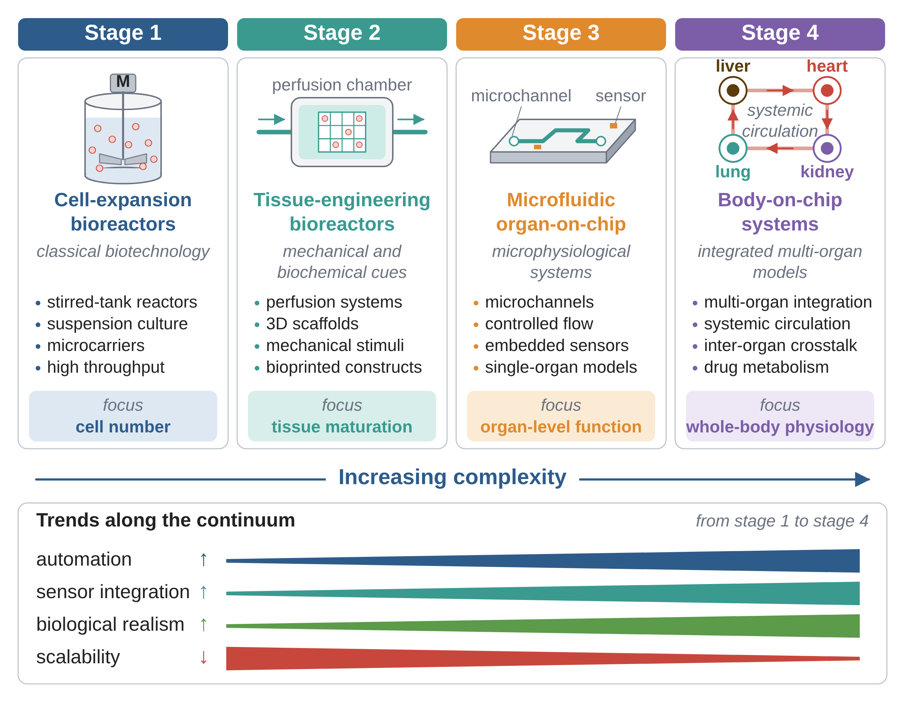
To capture this progression, Figure 5.1 illustrates the continuum of biofabrication bioprocesses — from cell expansion and aggregation to bioprinted constructs and finally integrated organ-on-chip systems. Across this continuum, the sophistication of environmental control increases while scalability decreases, reflecting a trade-off between industrial efficiency and biological realism.
Figure 5.1 arranges this continuum in four stages. Stage 1 comprises the cell-expansion bioreactors of classical biotechnology — stirred tanks, suspension culture and microcarriers — whose focus is cell number. Stage 2 covers tissue-engineering bioreactors that apply mechanical and biochemical cues to 3D scaffolds and bioprinted constructs, with tissue maturation as the goal. Stage 3 moves to microfluidic organ-on-chip systems, in which microchannels, controlled flow and embedded sensors reproduce organ-level function, and Stage 4 links several organ compartments, such as liver, heart, lung and kidney, through a systemic circulation to approximate whole-body physiology. The trend bars beneath the stages make the trade-off explicit: automation, sensor integration and biological realism grow from Stage 1 to Stage 4, whereas scalability shrinks.
5.1 Basic Requirements of Bioreactors
All bioreactors—whether for cell expansion, tissue maturation, or organ-on-chip modelling—share a common goal: to create a controlled microenvironment that supports living cells while allowing continuous monitoring and adaptation of culture conditions. Yet, their design priorities differ. Industrial bioreactors are optimised for productivity and scalability; tissue-engineering bioreactors emphasise biological realism and environmental precision.
At its simplest, a bioreactor consists of a culture chamber, medium reservoir, tubing, pumps, and sensors, often housed within an incubator that maintains temperature and gas composition (Figure 5.2). The chamber may hold a scaffold, a bioprinted construct, or a cell suspension, depending on the application. Medium circulation ensures continuous nutrient supply and waste removal, while actuators or flow controllers can apply mechanical stimuli such as shear stress, compression, or stretch.
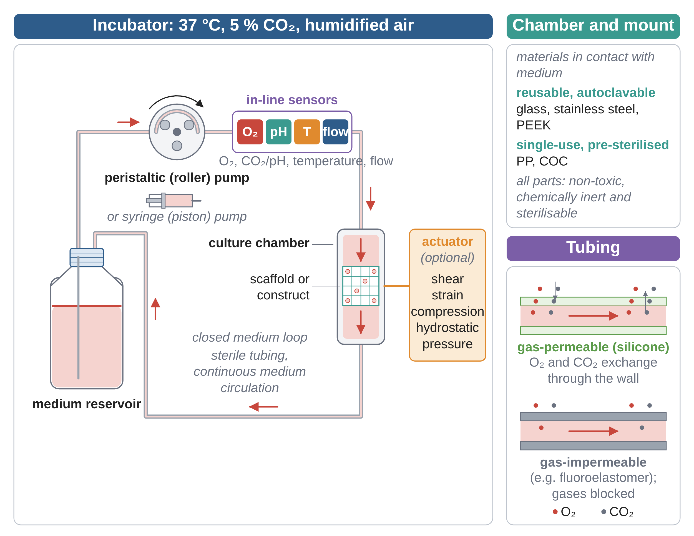
5.1.1 Core Design Principles
To achieve a stable and physiologically relevant environment, bioreactors must integrate several essential engineering and biological requirements. These core design principles define how materials, environmental control, mass transport, mechanical stimulation, and sensing systems interact to maintain viable, functional tissue cultures.
The core design principles are:
Biocompatibility and sterility. All components in contact with cells or medium must be non-toxic, sterilisable, and chemically inert. Common materials include glass, stainless steel, and high-performance polymers such as polyether-ether-ketone (PEEK), polypropylene (PP), or Topas® cyclic olefin copolymer (COC). Reusable bioreactors must withstand repeated autoclaving; single-use systems often rely on pre-sterilised disposable plastics. Modern designs increasingly use biodegradable or recyclable materials to minimise environmental impact.
Environmental control. Key parameters include temperature, pH, dissolved oxygen, and CO₂ concentration. These are maintained through integrated feedback loops that regulate heating, gas flow, and mixing. Advanced systems use closed-loop AI-based controllers to dynamically adjust medium flow and gas exchange based on real-time data.
Mass transport. Adequate nutrient delivery and waste removal are critical for large or dense constructs. Pump-driven perfusion ensures homogenous medium exchange throughout the scaffold volume, overcoming the diffusion limitations typical of static culture (see Section 5.2).
Mechanical stimulation. Depending on the tissue type, bioreactors may apply fluid shear, compressive strain, tensile loading, or cyclic pressure to mimic in vivo mechanical cues. Actuators—linear motors, valves, or pneumatic membranes—translate physical forces into cellular responses that drive differentiation and extracellular-matrix remodelling.
Monitoring and data integration. Modern bioreactors incorporate sensors for pH, temperature, dissolved oxygen, and pressure. More sophisticated systems include impedance, glucose, or lactate sensors to assess cell metabolism. Emerging trends involve non-invasive optical sensors and integrated imaging to visualise tissue growth without disturbing culture conditions. Beyond these, biomass, pressure and ubiquitous metabolites such as lactate are followed routinely, and the preference throughout is for sensors that measure online and non-invasively, that is, continuously and without removing a sample.
How the sensors work. Impedance sensors apply a small alternating voltage between two electrodes in the medium and measure the current. An intact plasma membrane is a thin insulating layer between two conducting salt solutions, so every living cell behaves as a tiny capacitor. Between roughly 0.1 and 10 MHz these capacitors charge and discharge with the field, and the measured capacitance is proportional to the total volume enclosed by intact membranes. Cells whose membranes have been permeabilised no longer contribute, so the signal follows the viable biomass rather than the total cell number, and it does so continuously and without sampling. The same principle, applied across a cell layer on a porous membrane, gives the transepithelial electrical resistance (TEER) used for barrier integrity in Section 3.5.2.
Glucose and lactate are measured with enzymatic electrodes. An oxidase enzyme, glucose oxidase or lactate oxidase, is immobilised in a thin membrane on the electrode surface and converts its substrate to a product and hydrogen peroxide. The peroxide is then oxidised electrochemically at the electrode, or passes its electrons to a mediator, and the resulting current is proportional to the substrate concentration. Because the enzyme is specific, the electrode reports one metabolite in a complex medium. Its drawbacks set the practical limits: the enzyme layer ages, so the sensor needs recalibration, and the electrode has to be in contact with the medium, which is why these measurements are usually made in a sampling or flow-injection loop rather than inside a sterile chamber.
Non-invasive optical sensors, often called optodes or sensor spots, avoid that contact altogether. A small patch of polymer containing a luminescent dye is fixed to the inside wall of the chamber or bag and read through the transparent wall with an optical fibre, so nothing crosses the sterile barrier and nothing is consumed. For oxygen, the dye is a metal complex whose excited state is quenched when it collides with an O₂ molecule: the higher the oxygen concentration, the shorter the luminescence lifetime, which is the Stern--Volmer relation. The instrument measures that lifetime as a phase shift between a modulated excitation and the emitted light, which makes the reading independent of lamp intensity, dye bleaching and the turbidity of the medium. For pH, the dye changes colour or emission on protonation and is measured against a second, insensitive reference dye, so the ratio of the two signals gives the pH. A CO₂ optode is a pH optode behind a gas-permeable membrane with a thin bicarbonate layer, in which dissolved CO₂ changes the pH that the dye reports. Optical imaging methods such as optical coherence tomography extend the same idea to structure, following the growth and the remodelling of a construct through the chamber wall.
The open problem. Almost all of these sensors measure the circulating medium, not the interior of the construct. They report the average that the pump delivers and returns, whereas the cells that are most at risk are those in the centre, where the concentration has fallen by the amount calculated in Section 5.2.1. Microelectrodes or fibre-optic probes pushed into a scaffold do measure locally, but they are invasive, disturb the flow around them and cannot be left in place for weeks. Non-invasive, online monitoring of oxygen, pH and metabolites inside the three-dimensional construct is therefore one of the clearest unmet needs in bioreactor engineering, and is the reason for the current interest in embedded optical particles, printed sensor fibres and label-free imaging.
From data to control. Whatever the sensor, its value lies in what is done with the signal. The readings feed a control system that compares them with set points and acts on heaters, pumps, valves and gas mixers, from a simple feedback loop to a model-based or machine-learning controller that anticipates a change in demand as the construct matures (Section 5.5.1). The same data stream is the batch record: a continuous, time-stamped log of what every culture experienced, which is what makes a process reproducible and, for a clinical product, auditable.
5.1.2 Materials and Fabrication
Building on these design principles, the next step is to select and fabricate the physical components that realise them. The materials and construction methods used in a bioreactor determine its biocompatibility, durability, and ability to maintain sterility under dynamic conditions. Careful material choice also enables sustainable, modular systems that can evolve with experimental needs.
The shift towards rapid prototyping has brought 3D printing into bioreactor design. Printable biocompatible resins (e.g. PEG-based photopolymers) and modular connectors allow fast customisation for specific tissues or chips. Hybrid manufacturing—combining machined components, 3D-printed parts, and microfluidic modules—enables flexible systems that can evolve with experimental needs. Table 5.1 compares typical materials used for bioreactor chambers and tubing with respect to biocompatibility, gas permeability, and sterilisation compatibility.
| Component | Typical materials | Gas permeability | Sterilisation method | Remarks |
|---|---|---|---|---|
| Chamber / vessel | Glass, stainless steel, PEEK, COC | Low | Autoclave, gamma | Durable, reusable |
| Scaffold holder | PEEK, polycarbonate, 3D-printed resin | Low–medium | Autoclave, ethanol | Must be inert and rigid |
| Tubing | Silicone, fluoroelastomer (e.g. Viton), Tygon® | High (silicone), low (fluoroelastomer) | Autoclave or chemical | Choose according to desired gas exchange |
| Connectors / fittings | Stainless steel, Luer-lock plastics | Low | Autoclave | Avoid leachables |
| Disposable chamber (single-use) | Medical-grade polypropylene or COC | Variable | Gamma | Lightweight, ready-to-use |
5.1.3 Towards Intelligent and Sustainable Bioreactors
Next-generation bioreactors are evolving towards smart, modular systems that integrate sensor networks, machine learning, and cloud-based data logging (Figure 5.3). They minimise manual intervention, reduce contamination risk, and generate standardised datasets for reproducible tissue culture. At the same time, sustainability considerations encourage the adoption of modular reusable frames with replaceable sterile cartridges, lowering plastic waste and cost.
Figure 5.3 contrasts two ways of organising this equipment. In a standard incubator (Figure 5.3A) the cabinet controls only temperature, CO₂ and humidity; the culture flasks sit on its shelves, while the control unit, sensors, pumps and data collection are separate external modules connected by cables and tubing, which means many handling steps and manual data transfer. In an integrated incubator system (Figure 5.3B) the bioreactor chamber, pumps, O₂, pH and temperature sensors, imaging, control unit and data collection share a single housing. Sensor and imaging data are fed back to the control unit, which adjusts the pumps in real time, and the data can be stored in the cloud and the system operated remotely. This closed, automated arrangement is what makes the reduced manual intervention, lower contamination risk and machine-learning-based optimisation described above possible.
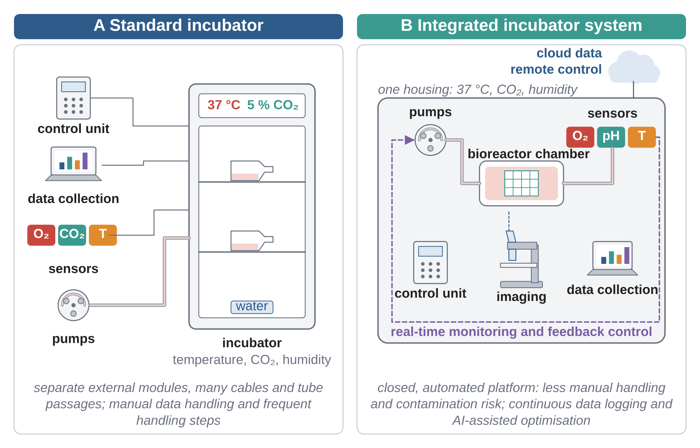
5.2 Mimicking Physiological Culture Conditions
Once the essential design and material foundations are established, the next challenge is to recreate the dynamic environment of living tissues. Real organs experience continuous flows of nutrients, gases, and mechanical forces — conditions far more complex than those in static culture. To approximate this reality, bioreactors must integrate controlled mass transport and physiologically relevant physical stimuli that guide cells towards maturation and function.
In living organisms, cells exist in finely tuned environments where nutrients, gases, and signalling molecules are constantly exchanged, and mechanical forces guide growth and function. To reproduce such conditions in vitro, a bioreactor must provide both chemical homeostasis and physical stimulation — two intertwined factors that determine tissue health and maturation.
5.2.1 Mass Transport
Efficient mass transport ensures that cells deep inside a construct receive enough oxygen and nutrients and that metabolic waste is removed. In static cultures, diffusion is the main transport mechanism. However, diffusion is inherently slow and limited to distances of about 200 µm, beyond which hypoxia and necrosis can occur. Figure 5.4A illustrates how nutrient concentration drops from the surface towards the centre of a tissue in a static culture (Charwat and Egger, 2018; for an introduction to 3D culture formats, see Kasper et al., 2021).
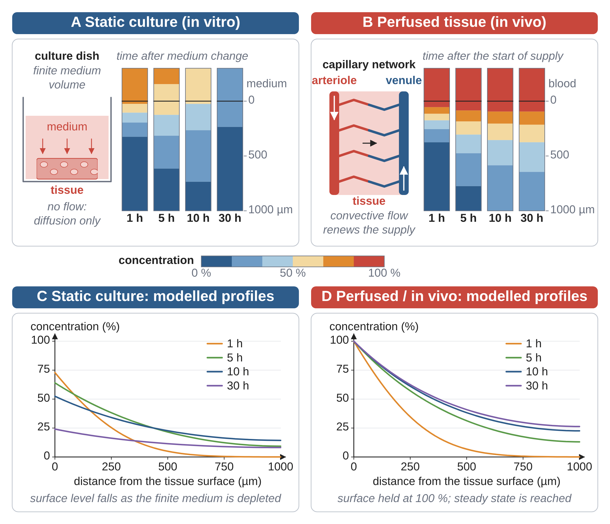
In vivo, vascular networks maintain constant nutrient supply and waste removal by convection, so that a stable concentration profile is maintained across the tissue (Figure 5.4B). Bioreactors emulate this through perfusion flow — circulating medium through or around the construct — which transforms a diffusion-limited system into a convection-enhanced one.
The four panels of Figure 5.4 make this contrast concrete. In the static dish (Figure 5.4A), each colour strip shows the concentration in the medium above the tissue and across 1000 µm of tissue depth at a given time after a medium change: shortly after feeding the medium is still rich but the concentration falls steeply within the tissue, and by 30 hours the finite medium volume itself is largely depleted, so that even the tissue surface sees a much lower concentration. In the perfused tissue (Figure 5.4B), the capillary network between arteriole and venule keeps the blood at full concentration, and the solute penetrates progressively deeper until the profile stops changing. Figure 5.4C and 5.4D show the same behaviour as curves computed with the diffusion–reaction model of Equation 5.2 introduced below: under static conditions the surface value and the overall level drop with time, whereas with convective supply the surface is held at 100 % and the profiles relax to a stable, high gradient.
When a tissue is cultured in vitro, a basic requirement for cell viability and development is sufficient mass transport. Mass transport fulfills three essential functions:
Nutrients are delivered to the cells.
Waste products are removed.
Information between cells is exchanged via soluble factors.
In these systems, diffusion is the primary driving force but also the most limiting factor. For example, in a tissue submerged in culture medium, the medium serves as a source of nutrients such as glucose and growth factors and acts as a sink for waste products.
Due to the difference in concentration between the supernatant and the tissue, a flux of molecules is established. Inside the tissue, the magnitude of this flux is governed by the diffusion coefficient (DAB) and the concentration gradient of the respective molecule, described by Fick’s first law of diffusion (Eq. 5.1):
\(J_{A} = - D_{AB}\frac{dC_{A}}{dx}\) (5.1)
where JA is the mass flux of component A, DAB the binary diffusion coefficient of component A in a mixture of A and B, and CA the concentration of component A. The negative sign indicates that diffusion occurs against the concentration gradient—from higher to lower concentration regions.
During culture, this process establishes a time-dependent concentration profile within the tissue. The highest nutrient concentration is found at the interface between the supernatant and the tissue (Figure 5.4A), the concentration falls steeply with depth, and over time the surface concentration itself drops as the finite volume of medium is consumed (Figure 5.4C). Over time, the limited diffusion capacity of static cultures results in nutrient gradients that restrict tissue thickness and viability.
Building on this description of steady-state diffusion, the time-dependent evolution of concentration profiles within a tissue can be expressed by Fick’s second law with an additional consumption term accounting for cellular uptake (first-order kinetics):
\(\frac{\partial C_{A}}{\partial t} = D_{e}\frac{\partial^{2}C_{A}}{\partial x^{2}} - kC_{A}\) (5.2)
where \(C_{A}\) is the concentration of solute A (kg m⁻³), \(D_{e}\) the effective diffusion coefficient in the tissue or scaffold (m² s⁻¹) and \(k\) the first-order consumption rate (s⁻¹).
Here, \(D_{e}\) represents the effective diffusion coefficient, which accounts for the reduced mobility of molecules within a porous or heterogeneous medium such as a tissue or scaffold. It differs from the binary diffusion coefficient \(D_{AB}\) used in Equation (5.1), since structural factors like porosity (\(\varepsilon\)) and tortuosity (\(\tau_{t}\)) hinder transport according to the relation
\(D_{e} = \varepsilon D_{AB}/\tau_{t}\) (5.3)
As a result, \(D_{e}\) is typically about 2–15 times lower than the diffusion coefficient in free solution, reflecting the restricted pathways available for solute movement inside biological constructs. \(D_{e}\) is commonly 10-10 – 10-11 m2 s-1 for proteins in tissues (\(\varepsilon\) = typically 0.2 – 0.8 and \(\tau_{t}\) = typically 1.5 – 3).
Measured diffusion coefficients of oxygen, sugars, organic acids and proteins in the alginate, agarose, carrageenan and other gels used to entrap cells, and the methods to measure them, are compiled by Willaert and Baron (1996).
Oxygen is usually the first nutrient to run out. Its solubility in culture medium is low — about 0.2 mol m⁻³ (0.2 mM) when the medium is in equilibrium with air at 37 °C — whereas dense tissue consumes it rapidly, so diffusion alone can supply only a thin layer of cells. For a constant (zero-order) volumetric uptake rate \(q\) (mol m⁻³ s⁻¹), the oxygen concentration falls to zero at the penetration depth
\(L = \sqrt{2DC_{0}/q}\) (5.4)
where \(D\) is the diffusion coefficient of oxygen in the construct and \(C_{0}\) the concentration at its surface. With \(D\) = 2 × 10⁻⁹ m² s⁻¹ and an uptake of 5 × 10⁻¹⁷ mol O₂ per cell per second, \(L\) is about 0.9 mm at 2 × 10⁷ cells mL⁻¹, 0.4 mm at 10⁸ cells mL⁻¹ and only about 0.13 mm at 10⁹ cells mL⁻¹, the cell density of native tissue — the origin of the 100–200 µm diffusion limit (Exercise Q3, Section 5.7.2). For first-order consumption (Equation 5.2), the corresponding length scale is the penetration length \(L_{p} = \sqrt{D_{e}/k}\), the depth over which the concentration falls by a factor e. Both length scales are derived from a mass balance in Box 5.1, which also gives the corresponding results for spherical constructs such as spheroids and organoids.
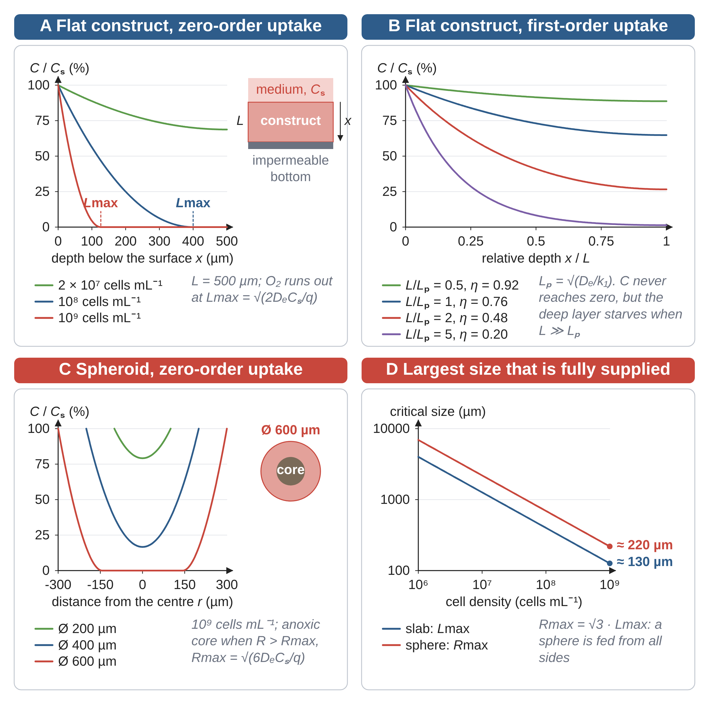
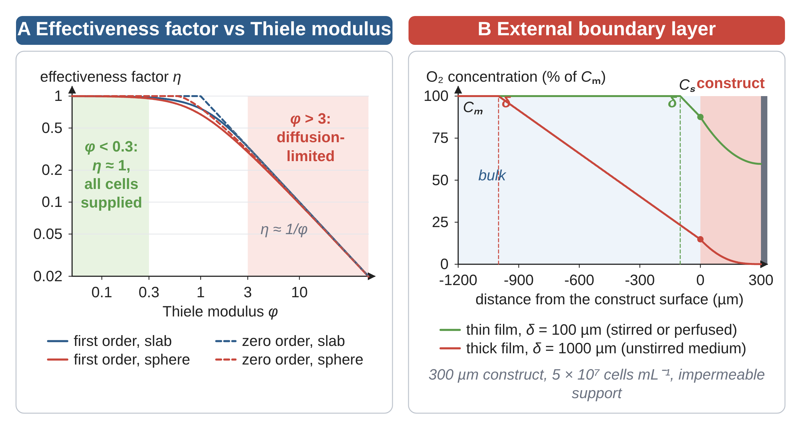
This simplified model predicts how concentration changes with both time and depth inside a construct. It shows that nutrients diffuse inward while simultaneously being consumed, producing characteristic gradients that depend on tissue density, metabolic rate, and medium renewal.
The solution of Eq. (5.2) corresponds qualitatively to the simulated profiles shown in Figure 5.4 C–D, where static culture conditions cause steep gradients and progressive, time-dependent depletion, while convective flow in vivo maintains near-steady concentrations. Whether a given construct is diffusion-limited, and whether stirring or perfusion will help, can be judged with the Thiele modulus and the boundary-layer criterion of Box 5.2.
To optimise transport and overcome these diffusion limits, engineers employ several complementary strategies:
Perfusion flow systems — continuous medium circulation through channels or porous scaffolds.
Scaffold microchannels — pre-defined pores or printed conduits that mimic vascular paths.
Dynamic mixing — gentle agitation to refresh boundary layers at construct surfaces.
Microfluidic control — precisely tuned shear flow and gradient formation, as discussed in Chapter 3.
Such approaches extend the viable tissue thickness from a few hundred micrometres to several millimetres and can be combined with computational flow modelling to predict nutrient profiles and optimise perfusion regimes for long-term culture.
Understanding and controlling mass transport is essential for maintaining viable, functional constructs—bridging the gap between static cultures and perfused, physiologically relevant tissue systems.
5.2.2 Physical Stimuli
Cells are not passive entities; they are mechanosensitive—able to detect and respond to physical forces (Figure 5.7). Mechanical cues regulate cytoskeletal organisation, gene expression, and extracellular matrix (ECM) synthesis. Bioreactors mimic these biophysical stimuli through controlled actuation (Figure 5.8).
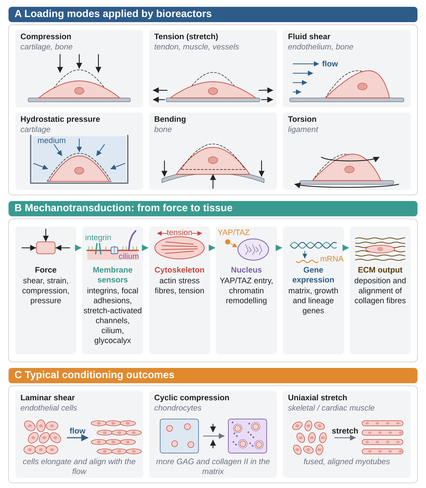
Figure 5.7 follows a mechanical stimulus from the bioreactor to the tissue. Figure 5.7A shows the six loading modes that bioreactors can impose — compression, tension, fluid shear, hydrostatic pressure, bending and torsion — each drawn as the deformation of a cell relative to its undeformed outline and labelled with typical target tissues, from cartilage and bone to tendon, endothelium and ligament. Figure 5.7B traces the mechanotransduction chain: membrane sensors such as integrins, focal adhesions, stretch-activated channels, the primary cilium and the glycocalyx pass the load to the actin cytoskeleton; the resulting tension drives YAP/TAZ into the nucleus and remodels chromatin, changing the expression of matrix, growth and lineage genes, and the cells finally deposit and align collagen fibres. Figure 5.7C gives three outcomes of controlled loading: endothelial cells elongate and align under laminar shear, chondrocytes produce more glycosaminoglycans and collagen II under cyclic compression, and uniaxial stretch yields fused, aligned myotubes.
Key categories of physical stimuli:
Shear stress — produced by fluid flow; vital for endothelial and bone cells.
Compression — simulates load-bearing in cartilage and bone.
Tensile strain — stretches muscle or ligament constructs.
Pressure cycles — recreate pulsatile blood flow or respiratory motion.
Electrical stimulation — guides excitation–contraction coupling in cardiac or neural tissues.
Temperature and pH shifts — influence enzymatic activity and metabolic rate.
Each tissue has its characteristic “mechanical fingerprint” — a specific combination of amplitude, frequency, and duration of mechanical loading that drives functional maturation. When these conditions are met, cells reorganise their cytoskeleton, align fibres, and upregulate ECM proteins such as collagen I and elastin, leading to improved structural integrity. Table 5.2 summarises the dominant stimuli and matching bioreactor designs for the main tissue types.
The magnitudes involved differ by orders of magnitude between tissues. Contact pressures in the human hip joint reach several megapascals during walking and up to about 18 MPa when rising from a chair (Hodge et al., 1986). Osteocytes in their lacunae are thought to sense load through interstitial fluid flow with wall shear stresses of roughly 0.8–3 Pa (Weinbaum et al., 1994). Endothelial cells experience about 0.1–0.6 Pa in veins and 1–7 Pa in arteries, and low or oscillating shear favours atherosclerosis (Malek et al., 1999). Loading also has a dose: tendons fail by fatigue under repeated loading well below their single-load strength, so the number of cycles matters as much as the amplitude (Schechtman and Bader, 1997).
In a perfusion chamber with a rectangular cross-section, the wall shear stress follows from the flow rate \(Q\), the dynamic viscosity \(\eta\) and the chamber width \(w\) and height \(h\) (laminar flow, \(w \gg h\)):
\(\tau_{w} = 6\eta Q/\left( wh^{2} \right)\) (5.5)
Because \(\tau_{w}\) scales with \(1/h^{2}\), halving the chamber height quadruples the shear stress at the same flow rate. A 500 µm high, 1 cm wide chamber perfused at 1 mL min⁻¹ exposes the cells to only 0.04 Pa, far below arterial values (Exercise Q4, Section 5.7.2).
| Tissue type | Primary physiological function | Representative stimuli | Example of bioreactor design |
|---|---|---|---|
| Lung | Gas exchange | Cyclic stretch, air–liquid interface | Pneumatic compression chamber or membrane-based bioreactor |
| Heart / Muscle | Contraction | Uniaxial or biaxial stretch, electrical pacing | Electro-mechanical actuator or stretchable substrate |
| Bone | Load-bearing | Compressive strain, fluid shear | Perfusion or compression bioreactor |
| Cartilage | Shock absorption | Intermittent compression, shear | Piston or dynamic compression system |
| Vascular tissue | Blood transport | Laminar flow, pulsatile pressure | Tubular flow loop with peristaltic pump |
| Skin / Barrier tissues | Protection and exchange | Air–liquid boundary, tensile stress | Interface culture bioreactor |
| Brain / Nerve | Signal transmission | Electrical stimulation, substrate topography | Microelectrode-integrated chamber |
Tissue function emerges from the interplay between biochemical and biophysical environments; mimicking these stimuli in bioreactors is key to guiding cells towards native-like structure and performance.
Figure 5.8 brings the chemical and physical sides of this interplay together. Figure 5.8A shows elongated cells embedded in a network of ECM fibres beneath flowing culture medium, surrounded by four groups of cues: the medium flow, which brings shear stress, growth factors, glucose, O₂ and CO₂ and sets the pH; cell–cell signalling through paracrine factors and direct contacts; cell–matrix interactions such as attachment, protein secretion, remodelling and matrix stiffness; and systemic cues including temperature, strain and electrical or electromagnetic fields. Figure 5.8B pairs each physical cue with the actuator that delivers it in a bioreactor: a pump for perfusion and fluid shear, a piston or platen for compression, grips for tensile strain, a pressure chamber for hydrostatic pressure and electrodes for electrical fields, while environmental control regulates temperature, O₂, CO₂ and pH. Chemical cues thus arrive with the medium and gas supply, whereas physical cues must be applied by dedicated hardware.
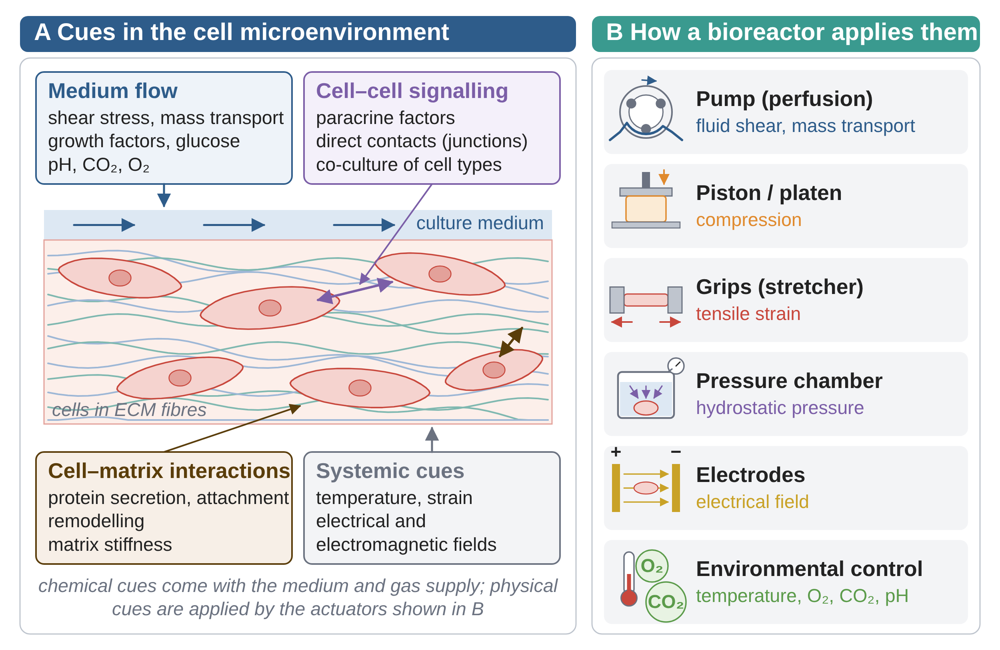
5.2.3 Perfusion and Vascularisation
Despite major progress in scaffold design and bioreactor technology, one of the greatest limitations in tissue engineering remains the lack of functional vascularisation. In native tissues, capillaries supply oxygen and nutrients to nearly every cell within a distance of ~100–200 µm. Beyond this limit, diffusion alone is insufficient to sustain cell viability.
To overcome this, perfusion bioreactors are used to deliver medium directly through the construct, mimicking physiological blood flow. Pump-driven perfusion ensures convective nutrient transport, efficient waste removal, and uniform oxygenation across the tissue volume. Compared with static culture, perfusion increases metabolic activity, supports three-dimensional cell growth, and enhances extracellular-matrix deposition.
Two main configurations exist (see Figure 5.9; a third, oscillating perfusion, is shown in Figure 5.9C):
Direct perfusion, where medium flows through the scaffold pores, exposing all cells to shear stress and nutrient flow.
Indirect perfusion, where medium flows around the construct inside a chamber, improving surface exchange without penetrating the entire volume.
These designs can be combined with pre-vascularisation strategies, where endothelial cells form microvessel networks inside the scaffold before perfusion begins. Once connected to the flow loop, these microvessels stabilise and mature, resembling early capillary beds. Advances in bioprinting, microfluidics, and angiogenic growth-factor gradients now allow fabrication of hierarchical vascular structures that can be connected to perfusion bioreactors.
Figure 5.9 compares direct and indirect perfusion with a third configuration, oscillating perfusion. In direct perfusion (Figure 5.9A), a pump circulates medium from a reservoir, optionally past an in-line oxygen sensor, through a chamber in which the porous scaffold is press-fitted and sealed with O-rings; because the medium cannot bypass the edge, it is forced through every pore, and the inset shows an almost flat concentration profile across the construct. In indirect perfusion (Figure 5.9B), medium sweeps over the construct and thins the boundary layer at its surface, but the interior is still supplied only by diffusion, so the inset profile still falls with depth. Oscillating perfusion (Figure 5.9C) periodically reverses the flow in a U-shaped tube, so that medium, or a cell suspension during seeding, passes back and forth through a scaffold clamped between two adaptors; this principle returns in the U-CUP system of Section 5.4.4.2.
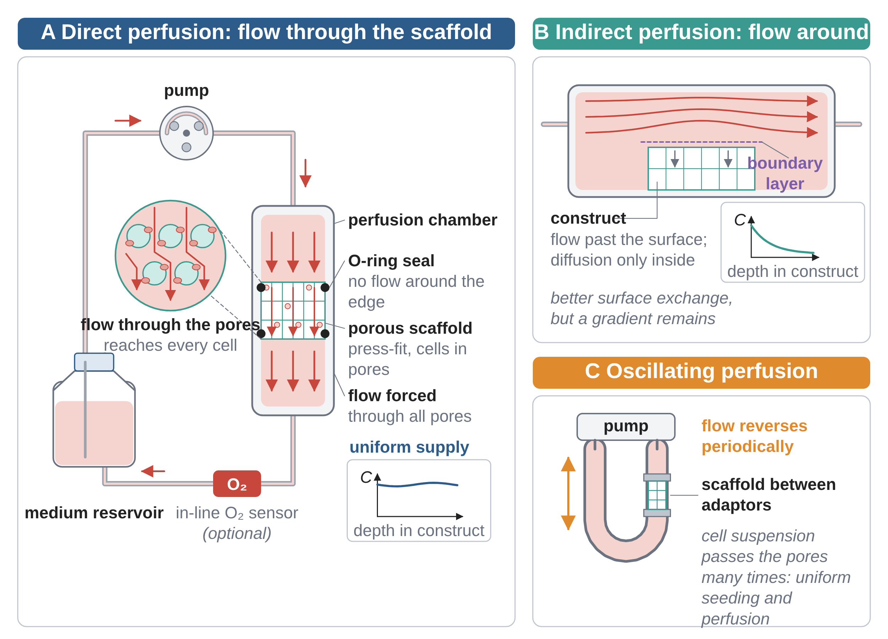
Vascularisation is the cornerstone of tissue viability. Perfusion bioreactors, combined with microengineered vascular networks, reproduce the essential convective transport and flow cues of living tissues, enabling scalable and physiologically relevant biofabrication.
By combining controlled chemical gradients and physical cues, modern bioreactors recreate the essential microenvironment required for tissue formation and maturation. Yet, before such complex systems can be realised, large numbers of viable and functional cells must first be produced under standardised and reproducible conditions. This need for scalable, automated, and quality-controlled cell production defines the next step in biofabrication — the development of cell-expansion and cell-based product bioreactors.
5.3 Bioreactors for Cell Expansion and Cell-Based Products
After mastering environmental control and physiological simulation, bioreactor design turns towards scalability and production. In biofabrication, this involves generating large quantities of viable, functional cells while maintaining genetic stability and phenotype. Such systems form the foundation for manufacturing cell therapies, engineered tissues, and secreted biomolecules (e.g. growth factors or extracellular vesicles).
5.3.1 Principles of Scalable Cell Expansion
Classical cell culture relies on static flasks or multilayer vessels that are labour-intensive and poorly scalable. In contrast, cell-expansion bioreactors provide automated control of pH, dissolved oxygen, and nutrient levels, enabling reproducible cell growth across large volumes.
Two main approaches are used:
Suspension cultures — Cells proliferate freely in stirred-tank (Figure 5.10) or wave-type bioreactors (Figure 5.11). This format is ideal for cell types that do not require surface attachment (e.g. lymphocytes or hybridomas).
Adherent cell expansion — For anchorage-dependent cells such as mesenchymal stem cells (MSCs) or fibroblasts, microcarriers offer a high-surface-area substrate that moves dynamically within the reactor (Figure 5.12). Agitation or perfusion ensures homogeneous cell distribution and efficient mass transfer.
The scale of the challenge follows from clinical doses. An analysis of clinical trials with mesenchymal stem cells found minimal effective doses of roughly 70–190 million cells per patient per dose, most often 100–150 million (Kabat et al., 2020); a single dose therefore needs several thousand square centimetres of culture surface, or dozens of culture flasks (Exercise Q8, Section 5.7.2). Stirred suspension bioreactors have been used to expand human pluripotent stem cells as aggregates (Elanzew et al., 2015), with feeding strategies tuned to keep the cells undifferentiated at high density (Kropp et al., 2016), and to expand skin-derived precursor cells (Surrao et al., 2016); rocking bioreactors expand lymphocytes for adoptive cell therapy to clinical scale (Somerville et al., 2012). Microcarriers made of polystyrene, dextran, gelatin or collagen, solid or macroporous, provide the growth surface for anchorage-dependent cells in such vessels (Chen et al., 2020), and placenta-derived stromal cells for a phase III trial in critical limb ischaemia were produced in three-dimensional bioreactors (Norgren et al., 2019).
Modern systems combine these concepts into modular, single-use bioreactors (Figure 5.13) that integrate online sensors for pH, dissolved oxygen, and biomass estimation. Automated feeding strategies and AI-based feedback control optimise medium composition in real time, reducing human variability and contamination risk. The operating modes in which such bioreactors are run — batch, fed-batch, continuous and perfusion — are compared in Box 5.3.
5.3.2 From Cell Expansion to Cell-Based Products
Beyond proliferation, bioreactors can direct cells towards differentiation, matrix deposition, or product secretion. In these applications, the reactor becomes not just a growth chamber but a functional bioprocessing platform. Examples include:
Stem-cell differentiation bioreactors that guide pluripotent stem cells towards specific lineages by timed addition of growth factors.
Organoid and spheroid production systems, which use low-shear, dynamically mixed environments to produce thousands of uniform 3D aggregates.
Exosome and extracellular-vesicle bioreactors, which allow continuous collection of secreted products under defined shear conditions.
Stirred-tank bioreactors have been used to differentiate human induced pluripotent stem cells into cardiomyocytes at large scale for drug-safety testing (de Korte et al., 2020), and scalable suspension culture produces functional pancreatic progenitors from embryonic stem cells (Schulz et al., 2012). Mesenchymal stem cells can be cultured as scaffold-free aggregates under hypoxia in a stirred tank (Egger et al., 2017), and small spinning bioreactors, each the size of one well of a multiwell plate, made it possible to grow many uniform brain organoids in parallel (Qian et al., 2016).
For patient-specific products, scale-out replaces scale-up: instead of one large vessel, many small, closed and automated units each produce one batch for one patient. In an academic phase I trial of CAR T cells, for example, a closed, semi-automatic device carried out cell selection, genetic modification and expansion, with an expansion phase of about 8–9 days, and 27 of 28 products met all release specifications (Castella et al., 2020). Closed single-use systems also fit the European rules for sterile manufacturing, whose 2022 revision requires a documented contamination control strategy and includes a dedicated section on single-use systems (European Commission, 2022).
Such systems often operate under Good Manufacturing Practice (GMP) standards, requiring closed, validated workflows with strict monitoring and traceability. The integration of single-use fluid paths, automated sampling, and digital batch recording is transforming cell culture from artisanal practice into reproducible biomanufacturing.
5.3.3 Engineering Considerations
Key design criteria for cell-expansion and product bioreactors include:
Mixing strategy: Gentle yet homogeneous mixing to prevent shear damage.
Gas exchange: Efficient oxygen transfer without bubble-induced stress.
Scalability: Geometries that can be scaled from millilitre to litre volumes without altering hydrodynamics.
Monitoring: Real-time sensors for pH, dissolved oxygen, glucose, lactate, and viable-cell density.
Compliance: Use of materials and processes meeting GMP and ISO clean-room requirements.
Two of these criteria can be quantified. First, oxygen supply must match demand. The oxygen transfer rate from the gas to the liquid must at least equal the oxygen uptake rate of the cells:
\(OTR = k_{L}a\,\left( C^{*} - C_{L} \right) \geq OUR = q_{O_{2}}X\) (5.6)
where \(k_{L}a\) is the volumetric mass-transfer coefficient, \(C^{*}\) the saturation concentration of oxygen, \(C_{L}\) the dissolved-oxygen concentration in the medium, \(q_{O_{2}}\) the specific uptake rate per cell and \(X\) the cell density. Because \(C^{*}\) is only about 0.2 mol m⁻³ for air, high cell densities require higher agitation, more sparging or oxygen-enriched gas, each of which increases hydrodynamic stress (Exercise Q6, Section 5.7.2). Box 5.4 explains where kLa comes from, how it is measured and how it changes on scale-up.
Second, hydrodynamic stress must stay below what the cells tolerate. In turbulent stirred vessels, cells on microcarriers are damaged mainly by eddies of about their own size. The smallest eddies have the Kolmogorov length scale
\(\lambda_{K} = \left( \nu^{3}/P_{m} \right)^{1/4}\) (5.7)
where \(\nu\) is the kinematic viscosity of the medium and \(P_{m}\) the power dissipated per unit mass. Damage to microcarrier cultures becomes significant when \(\lambda_{K}\) falls below about two-thirds of the microcarrier diameter (Croughan et al., 1987; Exercise Q7, Section 5.7.2). Scale-up rules therefore keep quantities such as the power input per volume, the impeller tip speed or \(k_{L}a\) constant rather than the stirrer speed, and computational fluid dynamics is used to map shear and mixing in the vessel before it is built (Kelly, 2008).
Table 5.3 summarises representative examples of bioreactor types used for large-scale cell production and cell-based product generation.
| Bioreactor type | Typical application | Cell type | Advantages | Limitations |
|---|---|---|---|---|
| Wave (rocking) | Expansion of fragile or stem cells | MSCs, iPSCs | Low shear, disposable bag, GMP-ready | Limited oxygenation for dense cultures |
| Microcarrier-based | Adherent cell expansion | MSCs, fibroblasts | High surface-to-volume ratio, scalable | Complex harvesting, microcarrier separation |
| Perfusion system | Continuous production or secretion | Hybridoma, stem cells | Steady nutrient supply, long-term culture | More complex control |
| Hollow-fibre | Exosome or protein harvest | MSCs, hepatocytes | High-density culture, selective diffusion | Difficult to monitor internally |
| Spheroid/organoid spinner | 3D cell aggregation | Stem-cell derived organoids | Uniform spheroid size, controlled shear | Limited large-scale scalability |
Bioreactors for cell expansion bridge basic research and clinical translation, providing the controlled environments necessary for cell therapy, tissue engineering, and bio-industrial production.
5.3.4 Examples of Commercial Bioreactor Systems
Modern bioreactors come in many shapes and scales, yet they all aim to provide cells with a stable environment that balances mixing, oxygenation, and gentle hydrodynamics. Commercial systems translate these engineering principles into plug-and-play formats for research and clinical manufacturing.
Figure 5.10–Figure 5.14 illustrate the diversity of current bioreactor designs — from large stirred-tank vessels used for bulk expansion, to wave-type platforms that minimise shear, to single-use bioreactors enabling sterile, automated processing. At the microscale, hollow-fibre systems take this concept further by creating diffusion-based mini-tissues where nutrients and gases cross semi-permeable membranes much like capillaries in vivo. Together, these systems highlight how bioreactor engineering evolves from simple mixing tanks to bioinspired microenvironments — each adapted to specific needs in cell therapy, tissue maturation, or biomanufacturing.
In the stirred-tank bioreactor of Figure 5.10A, a motor-driven shaft carries pitched-blade impellers that, together with baffles on the vessel wall, keep cells, nutrients, gases and heat evenly mixed. Gas enters as bubbles from a sparger ring at the bottom and as an overlay in the headspace, and leaves through a condenser and a sterile exhaust filter; a temperature jacket surrounds the vessel, and ports allow feed or base addition and harvest. Probes for pH, dissolved oxygen and temperature report to a controller that compares them with set points and adjusts the gas valves, the feed or base pump and the jacket temperature. Figure 5.10B shows the two ways in which the vessel is used: with free-floating suspension cells such as lymphocytes or hybridomas, or with adherent cells such as MSCs growing on microcarriers. Efficient mixing, real-time monitoring and feedback control make the stirred tank the backbone of scalable, reproducible cell expansion and biomolecule production.
The rocking bioreactor of Figure 5.11 achieves mixing without an impeller or sparger. Cells and medium fill about half of a pre-sterilised single-use bag whose headspace is inflated with air and CO₂ through sterile filters; the bag rests on a heated platform that tilts back and forth around a pivot, and sensor patches on its floor report pH and dissolved oxygen (Figure 5.11A). The rocking angle and rate determine the size of the wave in the medium. The close-up in Figure 5.11B shows why this matters: the travelling wave enlarges and continually renews the gas–liquid surface, so that O₂ enters and CO₂ leaves without bubbles, which keeps shear low for sensitive cells such as stem cells and lymphocytes. Commercial rocking systems cover working volumes from about one litre to a few hundred litres; because they are closed and single-use, they are widely used for the GMP-compliant manufacturing of cell therapies.
Figure 5.12 turns to anchorage-dependent cells. Microcarriers of about 100–300 µm provide the growth surface (Figure 5.12A): on solid beads the cells form a monolayer on the outer surface, whereas macroporous carriers also let them colonise the pores, where they are sheltered from shear. In stirred culture (Figure 5.12B), a slowly rotating paddle keeps the carriers suspended at low shear, medium is exchanged through a screen that holds the carriers back, and cells can bridge neighbouring carriers. In the fixed-bed alternative (Figure 5.12C), the cells grow on a packed bed — fibrous discs in the schematic — held in a column, and medium is pumped in a loop between this bed and a conditioning vessel in which gassing, pH, dissolved oxygen, feeding and harvest are controlled. Both formats scale the production of adherent cells from millions to billions of cells.
Figure 5.13 shows how a single-use stirred tank is built. A pre-sterilised disposable bag sits inside a reusable stainless-steel support vessel with a heating jacket; inside the bag, the impeller is turned by a magnetic drive beneath the vessel, so that no shaft has to pass through a seal, and gas enters through a ring sparger. Optical pH and dissolved-oxygen patches on the bag wall are read from outside, and sterile filters and aseptic connectors keep the gas, feed and harvest lines closed. Because everything that touches the medium is discarded after one run, while the vessel, drive, heater and reader never contact it, cleaning and sterilisation become unnecessary, turnaround between runs is short and the contamination risk is low. This makes single-use systems well suited to Good Manufacturing Practice (GMP) production of cell therapies.
The hollow-fibre bioreactor of Figure 5.14 separates the flowing medium from the cells by a membrane. Its cartridge (Figure 5.14A) holds thousands of semi-permeable fibres potted at both ends, so that medium entering the lumen inlet must pass through the fibre lumens, while the cells occupy the extra-capillary space (ECS) around the fibres, reached through separate ports for seeding, sampling and harvest. Across each fibre wall (Figure 5.14B), O₂ and glucose diffuse outwards to the densely packed cells and lactate and ammonia diffuse inwards, whereas antibodies, exosomes and other secreted products are too large to pass the molecular-weight cut-off and accumulate in the ECS. In the perfusion circuit (Figure 5.14C), a pump drives medium from a reservoir through a coil of gas-permeable tubing, which exchanges O₂ and CO₂ with the incubator air, and then through the lumens, with the ECS ports closed during culture. By combining perfusion in the lumen with diffusion across the membrane, hollow-fibre systems sustain very dense, long-lived, low-shear cultures for producing therapeutic proteins, exosomes or engineered tissue fragments.
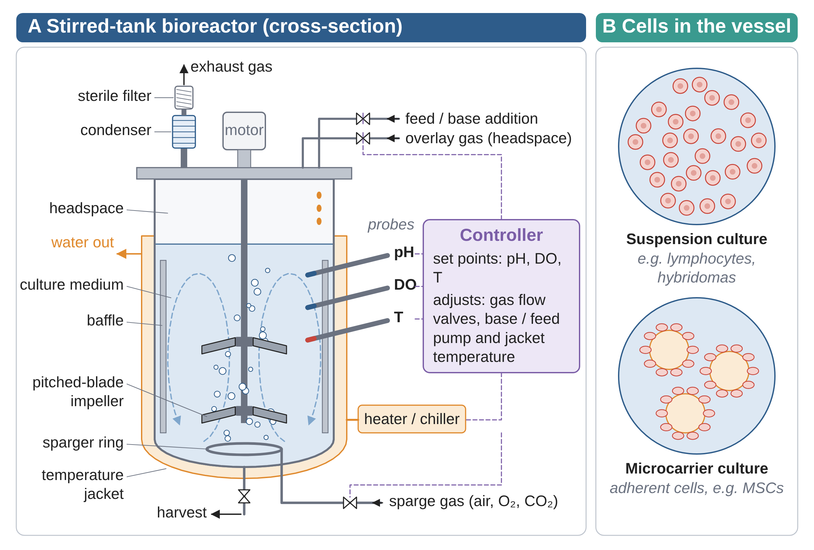
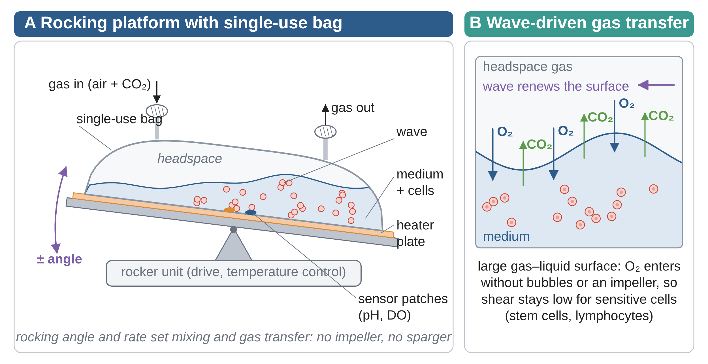
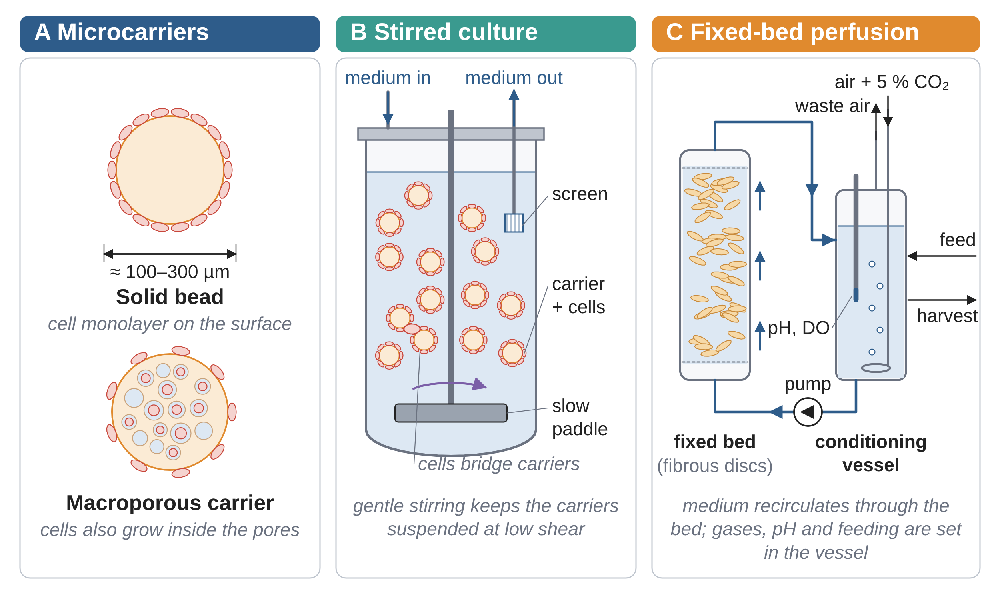
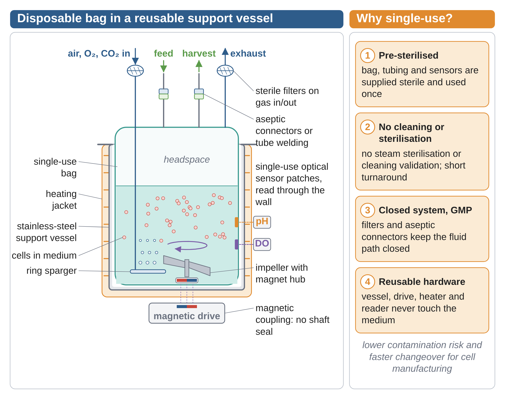
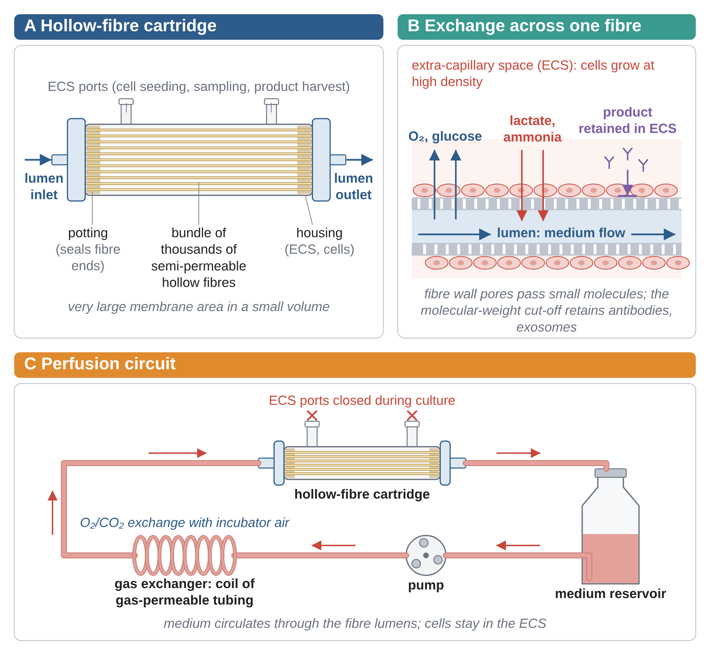
5.4 Bioreactors for Tissue Engineering and Maturation
While cell-expansion systems aim for maximal proliferation, tissue-engineering bioreactors focus on functional differentiation and matrix organisation. The goal is to transform cell-laden scaffolds or bioprinted constructs into living tissues that replicate the structure, mechanics, and physiology of their in vivo counterparts.
Such bioreactors bridge the gap between cell culture and implantable or testable tissues by providing controlled stimuli that guide maturation — mechanical, electrical, biochemical, and structural. They are often modular, allowing coupling with imaging, perfusion, or biochemical analysis systems for real-time functional monitoring.
5.4.1 Principles of Tissue Maturation
During maturation, cells synthesise and remodel extracellular matrix (ECM) components, develop intercellular junctions, and acquire tissue-specific architecture. The bioreactor’s role is to mimic these dynamic in vivo conditions through:
Mechanical conditioning, such as cyclic stretch, compression, or shear to align fibres and reinforce ECM structure.
Perfusion, providing continuous nutrient delivery and waste removal throughout the construct.
Electrical stimulation, synchronising activity in excitable tissues (e.g., cardiac and neural).
Biochemical signalling, by delivering growth factors or establishing gradients to trigger differentiation.
Mechanical and chemical feedback loops enable adaptive culture, in which sensor data adjust stimulation parameters in real time — an approach increasingly supported by AI-based control algorithms.
5.4.2 Example Applications
Bone and Cartilage — Compression and shear bioreactors enhance osteogenic and chondrogenic differentiation, producing mineralised and load-bearing ECM. Perfusion systems accelerate nutrient penetration and mineral deposition.
Cardiac and Muscle Tissue — Stretch and electrical pacing synchronise contractions, improving sarcomere organisation and mechanical strength.
Vascular Tissue — Pulsatile flow bioreactors condition endothelial and smooth muscle layers, forming robust vessel walls suitable for grafting.
Skin and Epithelial Barriers — Air–liquid interface systems recreate stratified layers with functional barrier properties and ECM integrity.
Liver and Organoid Systems — Dynamic perfusion improves hepatocyte function and supports multicellular organisation in long-term culture.
Table 5.4 summarises the typical bioreactor design and functional outcome for each target tissue. Three recent examples show how far bioreactor-based maturation has come. Cardiac tissues made from human induced pluripotent stem cell-derived cardiomyocytes became markedly more mature when the electrical pacing frequency was raised from 2 Hz to 6 Hz over two weeks (“intensity training”): the tissues developed adult-like sarcomere lengths, T-tubules and oxidative metabolism (Ronaldson-Bouchard et al., 2018). Engineered heart muscle grafts made from such cells and stromal cells in a collagen hydrogel remained engrafted for up to six months in macaques with heart failure, improved heart function and were implanted in a first patient (Jebran et al., 2025). In vascular tissue engineering, human smooth muscle cells are grown on a degradable tubular scaffold in a pulsatile bioreactor; the cells deposit a collagen-rich wall, and the vessel is then decellularised so that it can be stored and used off the shelf (Dahl et al., 2011; Niklason and Lawson, 2020). Such an acellular tissue-engineered vessel was approved by the US Food and Drug Administration in December 2024 as a conduit for extremity arterial injuries when vein grafts are not available (U.S. FDA, 2024); in the pivotal trial, 84 % of the vessels were patent after 30 days and fewer than 10 % of patients needed an amputation (Moore et al., 2025).
| Target tissue | Main stimuli | Typical bioreactor design | Functional outcome |
|---|---|---|---|
| Bone | Compression, shear | Perfusion/compression chamber | Mineralised, load-bearing matrix |
| Cartilage | Compression, hydrostatic pressure | Piston or dynamic compression system | Elastic, proteoglycan-rich ECM |
| Cardiac muscle | Cyclic stretch, electrical pacing | Electro-mechanical actuator | Synchronous beating, aligned myofibrils |
| Vascular tissue | Pulsatile flow, shear | Tubular flow-loop bioreactor | Functional endothelium, elastic wall |
| Skin | Tensile strain, air–liquid interface | Interface culture bioreactor | Stratified epidermis, functional barrier |
| Liver/organoid | Perfusion, chemical gradients | Microfluidic perfusion bioreactor | Enhanced metabolic and detoxification activity |
5.4.3 Functional Monitoring and Assessment
Evaluating tissue maturation requires both structural and functional metrics. Non-destructive, real-time techniques now complement traditional end-point assays:
Impedance spectroscopy (e.g. transepithelial electrical resistance, TEER) for barrier integrity and optical coherence tomography (OCT) for tissue structure.
Digital holographic microscopy (DHM) for cell activity monitoring.
Biomechanical testing to measure stiffness, elasticity, and contractility.
Online biochemical sensing for glucose, lactate, oxygen, and ECM protein secretion.
These technologies transform bioreactors into smart culture platforms, providing continuous feedback on tissue performance and maturation status.
Bioreactors for tissue maturation transform passive cell-laden scaffolds into living, functional tissues, bridging laboratory culture and physiological reality — a critical step towards implantable and testable engineered organs.
5.4.4 Examples of Commercial Bioreactor Systems
Bioreactors designed for tissue maturation and differentiation reproduce the physical and chemical cues that guide native tissue development. While many research labs build custom devices, several commercial systems are available that standardise these processes. They differ mainly in the type of mechanical stimulus applied—compression, shear flow, or pulsatile pressure—but all share the same purpose: to create a dynamic environment that strengthens and organises engineered tissues.
Figure 5.15–Figure 5.17 illustrate representative commercial bioreactor systems that translate engineering principles into practical tools for tissue maturation. Each platform applies a specific form of mechanical or fluidic stimulation—such as compression, shear flow, or pulsatile pressure—to guide cells towards the structural and functional organisation of native tissues. These examples show how modern bioreactors combine controlled actuation, perfusion flow, and sensor feedback to recreate key aspects of the physiological microenvironment within standard incubator setups. By understanding how these systems operate, readers can link the physical principles of bioreactor design to real-world applications in regenerative medicine and tissue engineering.
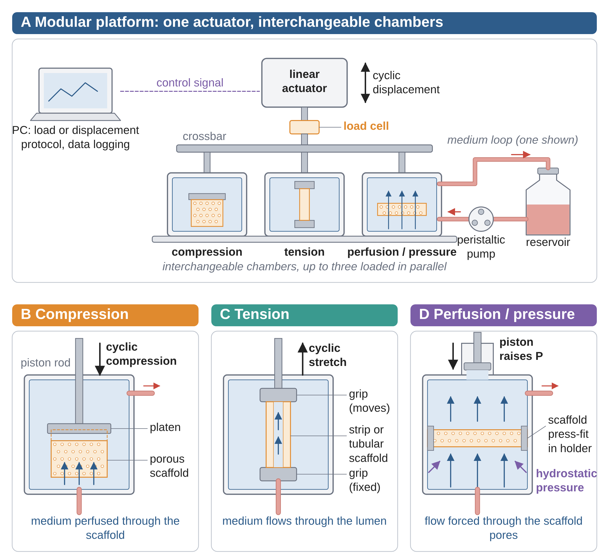
5.4.4.1 Ebers Medical TC-3 System — Versatile Multistimulus Platform
The TC-3 by Ebers Medical (Spain) is a modular platform with interchangeable chambers for compression, tension, perfusion or hydrostatic-pressure experiments (Figure 5.15); up to three chambers can be loaded at the same time. A peristaltic pump circulates medium through the chamber, maintaining pH and oxygen levels, while actuators apply precise cyclic deformation to the scaffold. The TC-3 can be used inside a standard incubator, making it accessible for routine studies on cartilage, tendon, and muscle tissues.
Working principle: The actuator compresses or stretches the scaffold rhythmically, while perfused medium delivers nutrients and removes waste. This combination mimics the loading and metabolic environment that cells experience in vivo.
The TC-3 acts as a multifunctional “exercise machine” for engineered tissues, allowing users to switch between different mechanical modes simply by changing the chamber.
5.4.4.2 Cellec Biotek U-CUP System — Flow-Driven Conditioning
The U-CUP (Cellec Biotek, Switzerland) provides a compact perfusion bioreactor for porous 3D scaffolds (Figure 5.16). The scaffold is clamped in one arm of a U-shaped tube, and medium is pumped back and forth through it, so that the flow through the pores reverses direction periodically (oscillating perfusion) and exposes the cells to moderate shear stress (Wendt et al., 2003). This ensures homogeneous nutrient and oxygen distribution even in thick constructs and supports the formation of bone and cartilage tissue.
Working principle: A syringe pump drives the medium through the scaffold; flow reversal distributes cells and nutrients evenly through the scaffold. The same oscillating flow of a cell suspension seeds the scaffold far more uniformly than static seeding (Wendt et al., 2003; Chen et al., 2011). Several units can be operated in parallel in one incubator for comparative studies.
The U-CUP transforms perfusion into a controlled biological workout—improving nutrient delivery and inducing shear-mediated tissue organisation.
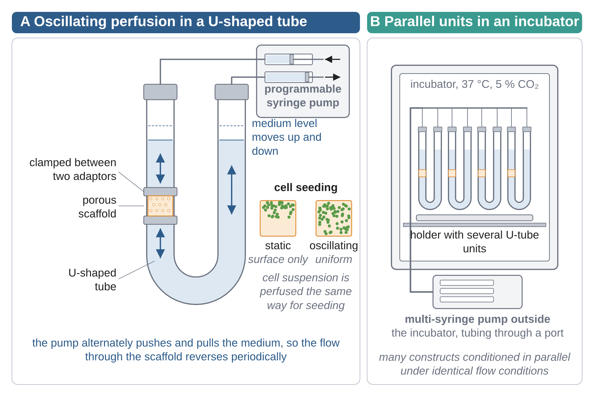
5.4.4.3 LumeGen System (Instron) — Pulsatile Vascular Conditioning
The LumeGen pulsatile bioreactor (Tissue Growth Technologies, now part of Instron) applies cyclic pressure waves to vascular grafts or tubular scaffolds (Figure 5.17). It reproduces the rhythmic expansion and relaxation of arteries under heartbeat-like flow. A computer-controlled pump sets the mean flow and a linear-motor stimulator superimposes user-defined pressure waveforms, while sensors record pressure and flow in real time. This system is used to mature arterial, cardiac, and endothelial tissues, where pulsatile loading promotes cell alignment and ECM remodelling.
Working principle: The medium is driven through a tubular scaffold mounted in a frame; cyclic changes in flow and pressure stretch the vessel wall, training it to withstand real blood flow.
Figure 5.17 details this set-up. In Figure 5.17A, the tubular graft is tied onto two barbed connectors inside a chamber filled with bath medium, with pressure transducers upstream and downstream of it and a flow meter on the return line; the pump and the linear-motor pulse generator described above act on the luminal medium. Figure 5.17B shows the resulting pressure, which oscillates between about 80 and 120 mmHg at about 1 Hz, so that the graft wall expands at each peak and relaxes in between. Figure 5.17C names the two cues the wall receives: luminal shear stress, which elongates endothelial cells and aligns them with the flow, and cyclic circumferential (hoop) stretch, which aligns smooth-muscle cells around the circumference and promotes ECM remodelling.
The LumeGen acts as a cardiovascular training simulator for engineered tissues—teaching them how to behave like native vessels under pulsatile stress.
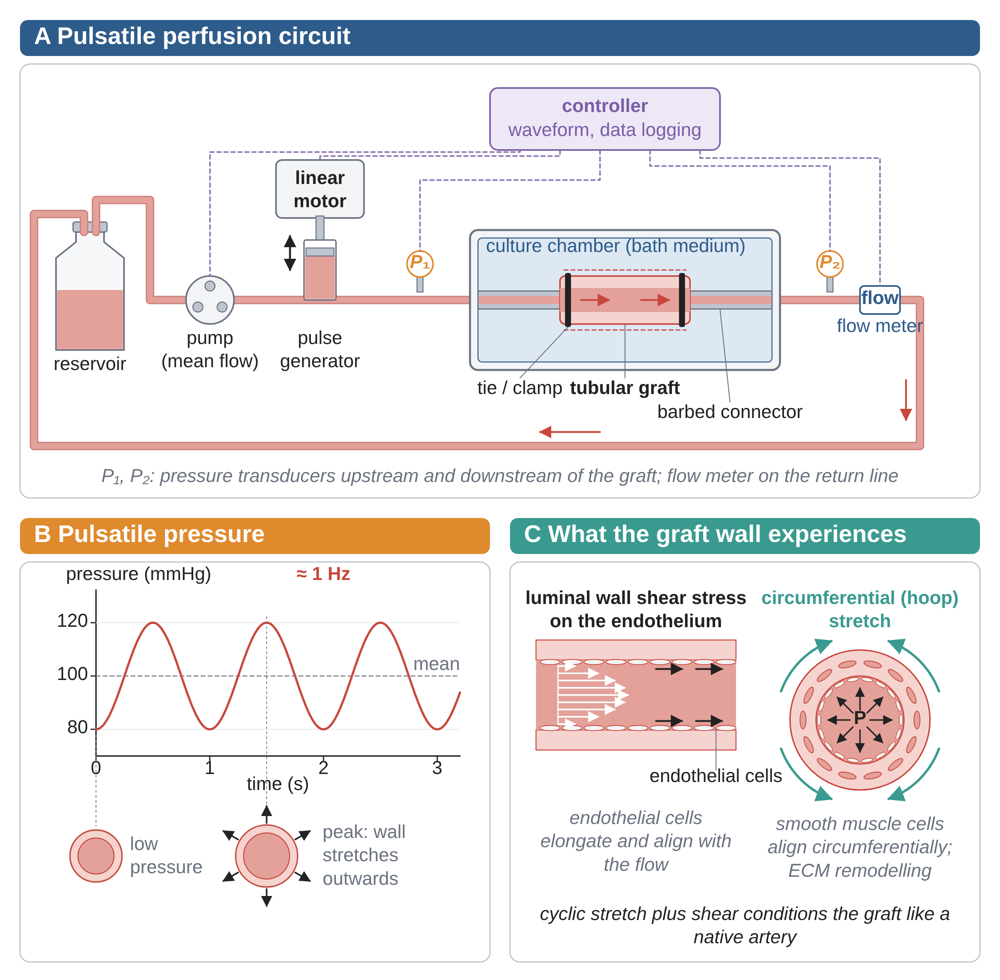
Together, these systems illustrate how different mechanical forces—compression, shear, and pulsation—translate into biological signals. By integrating sensors and programmable actuation, they allow researchers to fine-tune mechanical environments and quantify cell responses in real time. This represents a key step towards standardised, reproducible bioreactor culture in tissue engineering and regenerative medicine.
5.5 Emerging Trends and Future Directions
Bioreactor technology is rapidly evolving from mechanically driven culture systems into intelligent, integrated ecosystems capable of adapting to biological feedback. The next generation of biofabrication platforms will merge automation, sensor networks, and AI-based control, creating self-regulating environments that optimise tissue growth in real time.
5.5.1 Digitalisation and Smart Control
Modern bioreactors are increasingly equipped with embedded sensors measuring pH, oxygen, temperature, and mechanical load. When combined with machine learning, these data streams enable predictive control — adjusting perfusion rates, nutrient delivery, or stimulation regimes based on tissue response.
A key emerging concept is the digital twin, a computational model that mirrors the physical bioreactor system. It continuously updates using sensor data to simulate growth dynamics, predict failures, and optimise culture conditions without interrupting experiments. Digital twins also accelerate regulatory validation by documenting each step of the process automatically.
Digital twins of tissue-culture processes combine mechanistic models of growth, metabolism and transport with real-time sensor data (Möller and Pörtner, 2021). For bone substitutes, for example, in silico models have been used to identify culture conditions — perfusion rate, oxygen supply and medium exchange — before experiments are run (Kahlig et al., 2013).
5.5.2 Modularity and Integration
Future bioreactors will be modular and interoperable, allowing different functional units — perfusion, electrical stimulation, imaging, or biochemical sensing — to be connected as needed. This modularity enables scalable systems that range from microfluidic chips to litre-scale production setups.
Integration with organ-on-chip and bioprinted tissue constructs is also advancing. Hybrid systems that couple mechanical stimulation with controlled fluid flow or multi-organ communication (e.g. liver–heart–kidney-on-chip) enable realistic physiological modelling and personalised therapy testing.
5.5.3 Sustainable and Accessible Bioreactor Design
Sustainability is becoming a defining principle in bioreactor engineering. The shift towards recyclable polymers, biodegradable components, and single-use modules minimises contamination risks while reducing waste. Energy-efficient designs, modular reusable frames, and sterile cartridge systems extend usability and lower operational costs.
Moreover, the democratisation of fabrication tools such as 3D printing, CNC micromilling, and open-source hardware allows academic and small-scale laboratories to prototype and customise bioreactors rapidly — accelerating innovation and education in biofabrication.
5.5.4 Translational Outlook
As biofabrication technologies mature, bioreactors are increasingly central to clinical translation and industrial production. Standardisation efforts across academia, industry, and regulatory agencies are establishing reference models for reproducibility, scalability, and data integrity. Ultimately, future bioreactors will operate as autonomous biofactories — capable of growing, sensing, and adapting tissues for regenerative medicine, pharmaceutical testing, and space biology.
The future of bioreactor technology lies in intelligent, modular, and sustainable systems that merge digital control with biological adaptability — enabling truly autonomous, reproducible, and ethical biofabrication.
5.6 Summary and Future Perspectives
Bioreactors have evolved from simple culture vessels into integrated microphysiological systems that recreate the dynamic environment of living tissues. They are no longer designed merely to sustain cell growth but to guide tissue development, ensuring that cells experience realistic gradients of nutrients, oxygen, and mechanical cues.
Modern systems merge precision engineering with biological insight. A minimal configuration includes the vessel, scaffold or construct holder, tubing, pumps, sensors, and environmental control. Yet, the real innovation lies in the ability to reproduce in vivo-like transport and stimulation: perfusion bioreactors overcome diffusion limits; mechanical actuators deliver tissue-specific forces; and optical or electrochemical sensors monitor the evolving construct in real time.
The field is now entering a new phase where bioreactors become adaptive, data-driven ecosystems. Integrated sensor networks, closed-loop feedback, and machine learning enable autonomous control of temperature, flow, and shear. 3D printing and modular design shorten development cycles, allowing rapid prototyping of tailored reactors for bone, cartilage, liver, or cardiac tissues. At the same time, sustainability and miniaturisation are reshaping fabrication approaches—reusable frames with sterile single-use inserts minimise plastic waste and energy consumption.
Despite these advances, key challenges remain. Current sensors primarily probe the culture medium; future systems must include non-invasive probes that measure parameters within the scaffold—such as local oxygen tension, pH microgradients, and mechanical stress at the cellular level. Improved biocompatible resins for 3D-printed components will expand design freedom, while microfluidic vascularisation strategies and bioelectronic integration will bring cultured tissues closer to physiological function.
Mathematical and computational models remain indispensable for interpreting complex interactions of flow, diffusion, and mechanics, but their reliability depends on real sensor feedback. True process control will only be achieved when in silico models and in vitro measurements operate together in a closed information loop.
Looking ahead, industrial translation will demand scale-out rather than scale-up. Arrays of compact, automated bioreactor units—each running a standardised protocol—could meet the demand for reproducible, patient-specific tissues. In parallel, space-biology research and microgravity bioreactors open an unexpected frontier: understanding how physical cues shape life beyond Earth may in turn reveal new principles for regenerative medicine on Earth.
Next-generation bioreactors will combine automation, real-time sensing, and AI-driven control to create adaptive microenvironments where tissues mature autonomously. By integrating sustainability, modularity, and physiological realism, these systems will bridge the gap between laboratory constructs and clinically or industrially relevant tissues.
5.7 Exercises
Table 5.5 gives an overview of the exercises in this chapter: the conceptual, quantitative and computational exercises, what each block focuses on, and the section in which the background for each exercise is found.
| Block | Focus | Exercises (section) |
|---|---|---|
| Conceptual (Exercises 1–5) | What a bioreactor must do for a growing tissue. | 1. The role of a bioreactor in tissue engineering (5.2) 2. Diffusion versus perfusion (5.3.1) 3. Mass-transport hierarchy (5.3.1) 4. Mechanotransduction (5.3.2) 5. Vascularisation challenge (5.3.3) |
| Discussion / Ethics (Exercises 6–10) | Automation, manufacturing, sustainability and future healthcare. | 6. Automation and responsibility (5.6.1) 7. Scaling regenerative manufacturing (5.4.2) 8. Environmental impact (5.6.3) 9. Bioreactors in space biology (whole chapter) 10. Societal relevance (5.6) |
| Quantitative / Applied (Exercises Q1–Q9) | Transport, shear, oxygen supply and scale by hand calculation. | Q1. Diffusion time of a growth factor (5.3.1) Q2. Effective diffusion in a scaffold (5.3.1) Q3. Oxygen penetration depth (5.3.1) Q4. Wall shear stress in a parallel-plate perfusion chamber (5.3.2) Q5. Perfusion rate for oxygen supply (5.3.3) Q6. Oxygen transfer in a stirred-tank bioreactor (5.4.3) Q7. Turbulent eddies and microcarriers (5.4.3) Q8. How many cells for a clinical batch? (5.4.1) Q9. Energy use and sustainability (5.6.3) |
| Computational, Google Colab: interactive (Exercise 1) | Widget-driven calculators; no programming required. | 1. Bioreactor calculators: mass transport and perfusion, shear and turbulence, oxygen supply and batch size (5.3, 5.4) |
| Computational, Google Colab: Python (Exercises 1–6) | Notebooks in which the Python code is read and modified. | 1. Bioreactor type comparison and selection (5.4, 5.5) 2. Oxygen transfer in bioreactors (5.3.1, 5.4.3) 3. Cell growth kinetics and culture modes (5.4.1) 4. Mechanical stimulation protocol design (5.3.2, 5.5.1) 5. Perfusion system design (5.3.3) 6. Bioreactor scale-up economics (5.4.2) |
5.7.1 Conceptual Exercises
1. Define the role of a bioreactor in tissue engineering
Explain how the goals of a tissue-engineering bioreactor differ from those of an industrial biopharmaceutical bioreactor.
2. Diffusion versus perfusion
Why does static diffusion limit tissue thickness? Relate your answer to Fick’s laws and the concept of the effective diffusion coefficient.
3. Mass-transport hierarchy
Describe how convection, diffusion, and cellular uptake interact in maintaining homeostasis inside a 3D construct.
4. Mechanotransduction
Outline the cellular mechanisms by which mechanical forces such as shear or compression influence gene expression and ECM organisation.
5. Vascularisation challenge
Discuss why pre-vascularisation or microchannel printing is necessary for thick tissue constructs.
Discussion / Ethics
6. Automation and responsibility
If AI-controlled bioreactors make autonomous decisions about nutrient supply or differentiation cues, who bears responsibility for the biological outcome — the engineer, the AI designer, or the operator?
7. Scaling regenerative manufacturing
Debate the ethical and regulatory implications of mass-producing cell-based tissues for clinical use under automated GMP conditions.
8. Environmental impact
Evaluate how single-use plastic components in current bioreactor systems affect laboratory sustainability. Propose one design or material strategy to reduce waste without compromising sterility.
9. Bioreactors in space biology
Consider the challenges of running perfusion or mixing bioreactors in microgravity. Which engineering adaptations are necessary, and what scientific questions could space bioreactors help answer?
10. Societal relevance
Discuss how intelligent, self-regulating bioreactors might change future healthcare models — for example, personalised tissue culture at point of care.
5.7.2 Quantitative / Applied Exercises
Exercise Q1: Diffusion time of a growth factor. A growth factor of 30 kDa has a diffusion coefficient \(D_{AB}\) = 1.5 × 10⁻¹⁰ m² s⁻¹ in a static tissue sample. (a) Estimate the time needed for this molecule to diffuse 200 µm into the tissue, using the characteristic diffusion time \(t \approx x^{2}/\left( 2D_{AB} \right)\). (b) Repeat the estimate for a 2 mm thick construct. (c) Explain why doubling the construct thickness quadruples the diffusion time, and what this means for nutrient and growth-factor supply in thick constructs (Section 5.2.1).
Exercise Q2: Effective diffusion in a scaffold. A porous scaffold has a porosity \(\varepsilon\) = 0.6 and a tortuosity \(\tau_{t}\) = 2.0. (a) Calculate the effective diffusion coefficient \(D_{e}\) of the growth factor of Exercise Q1 with Equation 5.3. (b) By which factor does the diffusion time over 200 µm increase compared with Exercise Q1(a)? (c) Which scaffold design changes would increase \(D_{e}\), and what would they cost in mechanical stability?
Exercise Q3: Oxygen penetration depth. Culture medium saturated with air at 37 °C contains about \(C_{0}\) = 0.2 mol m⁻³ (0.2 mM) of dissolved oxygen. The diffusion coefficient of oxygen in the cell-laden gel is \(D\) = 2 × 10⁻⁹ m² s⁻¹ and each cell consumes \(q_{O_{2}}\) = 5 × 10⁻¹⁷ mol O₂ s⁻¹. (a) Calculate the volumetric consumption rate \(q\) (mol m⁻³ s⁻¹) and the penetration depth \(L = \sqrt{2DC_{0}/q}\) (Equation 5.4) for a cell density of 2 × 10⁷ cells mL⁻¹ (1 mL = 10⁻⁶ m³). (b) Repeat the calculation for 10⁸ cells mL⁻¹. (c) What is the maximum thickness of a slab that is supplied from both faces? Compare your results with the distance of 100–200 µm between cells and the nearest capillary in native tissue (Section 5.2.3).
Exercise Q4: Wall shear stress in a parallel-plate perfusion chamber. Medium (\(\eta\) = 1 × 10⁻³ Pa·s, \(\rho\) = 1000 kg m⁻³) flows at \(Q\) = 1 mL min⁻¹ through a rectangular chamber of height \(h\) = 500 µm and width \(w\) = 1 cm, in which endothelial cells grow on the bottom surface. (a) Calculate the wall shear stress with Equation 5.5, \(\tau_{w} = 6\eta Q/\left( wh^{2} \right)\). (b) Calculate the mean velocity \(U = Q/(wh)\) and the Reynolds number \(Re = \rho Uh/\eta\). Is the flow laminar? (c) Which flow rate is needed to reach 1.5 Pa, a value within the arterial range (Section 5.2.2)? Check that the flow is still laminar.
Exercise Q5: Perfusion rate for oxygen supply. A 1 cm × 1 cm × 1 cm porous scaffold contains 10⁷ cells, each consuming 5 × 10⁻¹⁷ mol O₂ s⁻¹ (as in Exercise Q3), and is perfused with medium containing 0.2 mol m⁻³ O₂. (a) Calculate the total oxygen consumption of the construct. (b) Which volumetric flow rate (in mL min⁻¹) is needed so that the outlet still contains at least 90 % of the inlet oxygen concentration? Calculate the corresponding superficial velocity \(u\) through the 1 cm² cross-section. (c) Calculate the Péclet number \(Pe = uL/D\) (with \(L\) = 1 cm and \(D\) = 2 × 10⁻⁹ m² s⁻¹) and the Damköhler number \(Da_{II} = kL^{2}/D\), using the pseudo-first-order rate constant \(k = Q/C_{0}\). What do these numbers tell you about diffusion versus perfusion in this construct?
Exercise Q6: Oxygen transfer in a stirred-tank bioreactor. Mesenchymal stem cells on microcarriers reach 2 × 10⁶ cells mL⁻¹ in a stirred tank; each cell consumes 5 × 10⁻¹⁷ mol O₂ s⁻¹. The saturation concentration of oxygen (air) is \(C^{*}\) = 0.2 mol m⁻³ and the dissolved oxygen is controlled at 40 % of air saturation. (a) Calculate the oxygen uptake rate OUR in mol m⁻³ h⁻¹. (b) Calculate the minimum volumetric mass-transfer coefficient \(k_{L}a\) (h⁻¹) needed to satisfy \(OTR = k_{L}a\,\left( C^{*} - C_{L} \right) \geq OUR\) (Equation 5.6). (c) The cell density triples. Which options are there to supply the extra oxygen, and what are their drawbacks for shear-sensitive cells (Section 5.3.3)?
Exercise Q7: Turbulent eddies and microcarriers. In a stirred microcarrier culture the impeller dissipates 20 W per m³ of medium (\(\rho\) = 1000 kg m⁻³, kinematic viscosity \(\nu\) = 8 × 10⁻⁷ m² s⁻¹). (a) Calculate the energy dissipation rate per unit mass \(P_{m}\) (W kg⁻¹) and the Kolmogorov length scale \(\lambda_{K} = \left( \nu^{3}/P_{m} \right)^{1/4}\) (Equation 5.7). (b) Cell damage on microcarriers becomes likely when \(\lambda_{K}\) drops below about two-thirds of the microcarrier diameter. Is a 180 µm microcarrier at risk? (c) Which power input per volume would give \(\lambda_{K}\) = 120 µm? Explain why scale-up at constant power per volume is often preferred to scale-up at constant stirrer speed.
Exercise Q8: How many cells for a clinical batch? Clinical trials with mesenchymal stem cells typically use about 10⁸ cells per patient per dose (Section 5.3.1). Assume a harvest density of 2 × 10⁴ cells cm⁻² on any growth surface. (a) Calculate the growth area needed for one dose and the corresponding number of T-175 flasks (175 cm² each). (b) Microcarriers are added at 2.5 g L⁻¹ with a specific surface area of 4400 cm² g⁻¹. How many cells does one litre of microcarrier culture yield, and which working volume is needed for 100 doses? (c) Discuss why stirred-tank or fixed-bed bioreactors replace flasks at this scale, and which quality attributes must be verified after expansion.
Exercise Q9: Energy use and sustainability. A standard CO₂ incubator draws 150 W and a modular mini-incubator 30 W; both run continuously for 30 days. (a) Calculate the energy use of both (in kWh) and the energy saved. (b) Discuss two other sources of environmental impact in bioreactor culture (Section 5.5.3) and one strategy to reduce each without compromising sterility.
5.7.3 Computational Exercises — Interactive (Google Colab)
The exercises in this section are supported by an interactive Python notebook running in Google Colab, a free, browser-based environment from Google in which Python code is executed on cloud servers. Calculations can therefore be performed directly in the browser, without local software installation; only a web browser and a (free) Google account are needed.
The notebook contains six widget-driven calculators that turn the quantitative exercises Q1–Q8 of Section 5.7.2 into live tools: diffusion and penetration depth in a static construct, wall shear stress in a parallel-plate perfusion chamber, the Péclet and Damköhler numbers of a perfused scaffold, the oxygen balance of a stirred-tank culture, the Kolmogorov length scale for microcarrier culture, and the culture volume needed for a clinical batch of cells. Sliders and preset menus set the transport, flow and process parameters, and each calculator immediately recalculates its result and redraws a graph in which a red dot marks the current setting, so that an answer obtained by hand can be checked and its sensitivity to every input explored. No programming is required. Section 5.7.4, in contrast, contains seven notebooks in which the Python code itself is read and modified. To start, open the notebook via the QR code or link, run the Setup cells first (or select Runtime → Run all) to activate the widgets, and then move the sliders; if the widgets or graphs do not appear, run the cells again with Runtime → Run all.
5.7.3.1 Exercise 1 — Bioreactor Calculators: Mass Transport and Perfusion, Shear Stress and Turbulence, Oxygen Supply and Batch Size
Problem Statement
Whether a bioreactor keeps its cells alive and functional can usually be judged with a handful of short equations: how far a nutrient diffuses into a construct, how much shear a perfusion flow exerts, whether convection or diffusion dominates in a perfused scaffold, how much oxygen a dense culture consumes, how small the turbulent eddies around a microcarrier become and how large a vessel must be to produce one clinical batch. The quantitative exercises Q1–Q8 of Section 5.7.2 ask for these numbers by hand. This notebook turns the same equations into six slider-driven calculators, so that the answer to each exercise can be checked immediately and, more importantly, the sensitivity of the result to every input can be explored. The purpose is to see which parameter dominates each outcome, and where a modest change in an operating setting has a large biological consequence.
The engineering challenge is to understand the trade-offs between:
construct thickness, cell density and scaffold microstructure and the supply of nutrients and oxygen by diffusion (Section 5.2.1, Equations 5.1–5.4, Figure 5.4, Exercises Q1–Q3 in Section 5.7.2),
perfusion flow rate, convective supply and the wall shear stress experienced by the cells (Section 5.2.2 and 5.2.3, Equation 5.5, Figure 5.9, Exercises Q4 and Q5 in Section 5.7.2),
and oxygen transfer, agitation intensity and culture volume when cell expansion is scaled up (Section 5.3.3, Table 5.3, Equations 5.6 and 5.7, Figure 5.12, Exercises Q6–Q8 in Section 5.7.2).
The notebook starts with two Setup cells (Colab widget manager, libraries, tissue and exercise presets) and contains six calculators, each with a short description, a LaTeX equation, sliders and a live graph (the red dot marks the current setting):
Fick’s Law Visualiser — 1D diffusion with optional consumption — preset menu with five tissues (Cartilage, Cardiac, Liver, Brain, Skin) and four exercise presets, diffusivity \(D\) 10⁻¹²–10⁻⁸ m² s⁻¹, first-order consumption rate \(k\) 10⁻⁷–10⁻¹ s⁻¹ (with a “No consumption (k=0)” checkbox), porosity \(\varepsilon\) 0.1–1.0, tortuosity \(\tau_{t}\) 1–5, depth \(L\) 50–5000 µm, surface concentration \(C_{0}\), simulation time up to 24 h, 3–8 profiles and grid spacing 5–50 µm; the graph shows concentration profiles at increasing times with the steady state, and the diffusion time versus depth (Exercises Q1–Q3),
Shear Stress Calculator — rectangular perfusion channel — viscosity 0.5–4 mPa·s, flow rate 0.01–100 mL min⁻¹, chamber width 1–50 mm, height 50–2000 µm and a target stress of 0.1–5 Pa, giving wall shear stress, mean velocity, Reynolds number and the flow rate needed for the target, with a log–log graph of shear stress versus flow rate and venous and arterial reference bands (Exercise Q4),
Perfusion Design Helper — Péclet and Damköhler numbers — the five tissue presets plus a “Q5 perfused scaffold” preset, \(D\), \(k\), scaffold length 0.1–20 mm, superficial velocity 1–10⁴ µm s⁻¹ and cross-section 0.1–10 cm², giving Pe, Da\(_{II}\), Da\(_{I}\), flow rate, residence time and outlet concentration, with graphs of Pe and Da\(_{I}\) versus velocity and a Pe–Da\(_{II}\) regime map (Exercise Q5),
Oxygen Transfer — OUR, required kLa and critical cell density — cell density 0.1–20 × 10⁶ cells mL⁻¹, specific uptake rate 0.5–20 × 10⁻¹⁷ mol cell⁻¹ s⁻¹, saturation concentration \(C^{*}\) 0.1–1.0 mol m⁻³, dissolved-oxygen set point 0–90 % of air saturation and the \(k_{L}a\) of the bioreactor (0.5–50 h⁻¹), with a graph of the required \(k_{L}a\) versus cell density (Exercise Q6),
Kolmogorov Length Scale and Microcarriers — power input per volume 0.1–1000 W m⁻³, kinematic viscosity 5–15 × 10⁻⁷ m² s⁻¹, density 990–1050 kg m⁻³ and microcarrier diameter 100–300 µm, with a log–log graph of the Kolmogorov length versus power input and a risk zone below two-thirds of the microcarrier diameter (Exercise Q7),
Growth Area and Microcarrier Volume per Clinical Batch — cells per dose 0.1–10 × 10⁸, harvest density 0.5–10 × 10⁴ cells cm⁻², flask area 25–225 cm², microcarrier concentration 0.5–10 g L⁻¹, specific surface area 1000–8000 cm² g⁻¹ and 1–1000 doses, with a graph of the litres of microcarrier culture versus the number of doses (Exercise Q8).
Learning Outcomes
After completing this exercise, you should be able to:
Estimate diffusion times and penetration depths and explain why they scale with the square of the construct thickness and the square root of the diffusivity.
Calculate the effective diffusivity of a porous scaffold and its effect on transport.
Calculate the wall shear stress and Reynolds number in a parallel-plate perfusion chamber and choose a flow rate for a target stress.
Use the Péclet and Damköhler numbers to decide whether a construct is limited by diffusion, convection or consumption.
Calculate the oxygen uptake rate, the required \(k_{L}a\) and the critical cell density of a stirred culture.
Calculate the Kolmogorov length scale and the maximum power input for microcarrier culture, and estimate the culture volume needed for a clinical batch.
Theoretical Background
1) Diffusion, consumption and penetration depth. The calculator solves the one-dimensional diffusion–reaction equation (Equation 5.2) with an implicit finite-difference scheme,
\[\frac{\partial C}{\partial t} = D_{e}\frac{\partial^{2}C}{\partial x^{2}} - kC,\quad\quad D_{e} = \frac{\varepsilon D}{\tau},\quad\quad L_{p} = \sqrt{D_{e}/k}\]
with \(C = C_{0}\) at the surface and no flux at \(x = L\) (a construct on an impermeable support, or the mid-plane of a slab of thickness \(2L\) fed from both faces). The read-outs are the characteristic diffusion time \(t \approx L^{2}/\left( 2D_{e} \right)\), the first-order penetration length \(L_{p}\) and the steady-state profile \(C(x) = C_{0}\cosh\left\lbrack (L - x)/L_{p} \right\rbrack/cosh\left( L/L_{p} \right)\). For the growth factor of Exercises Q1 and Q2 (\(D\) = 1.5 × 10⁻¹⁰ m² s⁻¹), \(t\) = 133 s over 200 µm and 3.7 h over 2 mm; with \(\varepsilon\) = 0.6 and \(\tau\) = 2, \(D_{e}\) = 4.5 × 10⁻¹¹ m² s⁻¹ and the time rises 3.33-fold to 444 s. For zero-order oxygen consumption (Equation 5.4), the penetration depth is
\[L = \sqrt{\frac{2DC_{0}}{Q}}\]
which the calculator reports for the same initial uptake rate \(q = kC_{0}\), so that \(L = \sqrt{2}\, L_{p}\). With \(D\) = 2 × 10⁻⁹ m² s⁻¹, \(C_{0}\) = 0.2 mol m⁻³ and \(q\) = 5 × 10⁻¹⁷ mol s⁻¹ cell⁻¹ × 2 × 10⁷ cells mL⁻¹ = 10⁻³ mol m⁻³ s⁻¹ (equivalent \(k\) = 5 × 10⁻³ s⁻¹), \(L\) = 894 µm and \(L_{p}\) = 632 µm; at 10⁸ cells mL⁻¹ (\(k\) = 2.5 × 10⁻² s⁻¹), \(L\) = 400 µm (Exercise Q3). The default Cartilage preset (\(D\) = 8 × 10⁻¹¹ m² s⁻¹, \(k\) = 3 × 10⁻⁶ s⁻¹, \(L\) = 2 mm) gives \(t\) = 6.94 h, \(L_{p}\) = 5.16 mm and \(C(L)/C_{0}\) = 0.12 after 2 h (0.93 at steady state). The tissue presets describe a slowly consumed solute such as a growth factor; their \(k\) values are two to four orders of magnitude below those of oxygen at tissue cell densities.
2) Wall shear stress in a parallel-plate chamber. For laminar flow at a flow rate \(Q\) between plates of width \(w\) and spacing \(h\) (\(w \gg h\)), Equation 5.5 gives
\[\tau_{w} = \frac{6\eta Q}{wh^{2}},\quad\quad U = \frac{Q}{wh},\quad\quad Re = \frac{\rho Uh}{\eta}\]
For \(\eta\) = 1 mPa·s, \(Q\) = 1 mL min⁻¹, \(w\) = 1 cm and \(h\) = 500 µm: \(\tau_{w}\) = 0.040 Pa (0.40 dyn cm⁻²), \(U\) = 3.33 mm s⁻¹ and \(Re\) = 1.7. A target of 1.5 Pa requires \(Q = \tau_{w}wh^{2}/(6\eta)\) = 37.5 mL min⁻¹, at which \(Re\) = 62.5, still laminar (Exercise Q4). The calculator labels the flow laminar below \(Re\) = 1000.
3) Péclet and Damköhler numbers. For a scaffold of length \(L\) perfused at a superficial velocity \(u\),
\[Pe = \frac{uL}{D},\quad\quad{Da}_{II} = \frac{kL^{2}}{D},\quad\quad{Da}_{I} = \frac{kL}{u},\quad\quad\frac{C_{out}}{C_{in}} \approx 1 - {Da}_{I}\]
Pe compares convection with diffusion, Da\(_{II}\) consumption with diffusion and Da\(_{I}\) consumption with convection; the last expression holds for zero-order uptake \(Q_{O_{2}} = kC_{in}\) (first-order: \(e^{- {Da}_{I}}\)). For the 1 cm³ scaffold of Exercise Q5 (10⁷ cells, \(k\) = 2.5 × 10⁻³ s⁻¹, \(D\) = 2 × 10⁻⁹ m² s⁻¹, \(L\) = 1 cm) and \(u\) = 250 µm s⁻¹: Pe = 1250, Da\(_{II}\) = 125, Da\(_{I}\) = 0.10, an outlet concentration of 90 % of the inlet and \(Q = uA\) = 1.5 mL min⁻¹ through 1 cm². All five tissue presets lie at Pe ≈ 500–2100 and Da\(_{II}\) ≈ 0.02–0.15.
4) Oxygen transfer. The oxygen balance of a stirred culture (Equation 5.6) is
\[OTR = k_{L}a\left( C^{*} - C_{L} \right) \geq OUR = q_{O_{2}}X,\quad\quad k_{L}a_{req} = \frac{OUR}{C^{*} - C_{L}},\quad\quad X_{crit} = \frac{k_{L}a\left( C^{*} - C_{L} \right)}{q_{O_{2}}}\]
With 2 × 10⁶ cells mL⁻¹ (2 × 10¹² cells m⁻³), \(q_{O_{2}}\) = 5 × 10⁻¹⁷ mol cell⁻¹ s⁻¹, \(C^{*}\) = 0.2 mol m⁻³ and a set point of 40 % (\(C_{L}\) = 0.08 mol m⁻³): OUR = 0.36 mol m⁻³ h⁻¹ and \(k_{L}a_{req}\) = 3.0 h⁻¹ (Exercise Q6). At the default bioreactor \(k_{L}a\) of 5 h⁻¹, \(X_{crit}\) = 3.33 × 10⁶ cells mL⁻¹.
5) Kolmogorov length scale. With the energy dissipation rate per unit mass \(P_{m} = (P/V)/\rho\), Equation 5.7 gives
\[\lambda_{K} = \left( \frac{\nu^{3}}{P_{m}} \right)^{1/4},\quad\quad\left( \frac{P}{V} \right)_{\max} = \rho\frac{\nu^{3}}{\lambda_{K,min}^{4}},\quad\quad\lambda_{K,min} = \frac{2}{3}d_{mc}\]
For 20 W m⁻³, \(\rho\) = 1000 kg m⁻³ and \(\nu\) = 8 × 10⁻⁷ m² s⁻¹: \(P_{m}\) = 0.02 W kg⁻¹ and \(\lambda_{K}\) = 71 µm, below the 120 µm limit of a 180 µm microcarrier; \(\lambda_{K}\) = 120 µm requires \(P/V \leq\) 2.47 W m⁻³ (Exercise Q7).
6) Growth area and culture volume. With \(N_{dose}\) cells per dose, harvest density \(\sigma\), microcarrier concentration \(c_{mc}\) and specific surface area \(a_{mc}\),
\[A_{dose} = \frac{N_{dose}}{\sigma},\quad\quad\frac{\text{cells}}{\text{L}} = c_{mc}a_{mc}\sigma,\quad\quad V_{batch} = \frac{n_{doses}N_{dose}}{c_{mc}a_{mc}\sigma}\]
For 10⁸ cells at 2 × 10⁴ cells cm⁻²: 5000 cm², or 29 T-175 flasks per dose; 2.5 g L⁻¹ × 4400 cm² g⁻¹ = 11,000 cm² L⁻¹ gives 2.2 × 10⁸ cells L⁻¹, so 100 doses need 45.5 L of microcarrier culture, or 2858 flasks (Exercise Q8).
Model Assumptions
These calculators are intentionally simplified to emphasise core mechanisms:
Transport in the construct is one-dimensional with constant \(D\); consumption is first-order and uniform, and the cells neither proliferate nor die during the simulation. The zero-order depth is an analytical comparison, not a second simulation.
The shear calculator assumes fully developed laminar flow between infinitely wide plates; entrance effects, side walls and the curvature of cells are ignored.
The Péclet and Damköhler numbers are order-of-magnitude indicators for plug flow through a homogeneous scaffold; channelling and pore-scale shear are not modelled.
The oxygen balance is a steady state with uniform \(k_{L}a\); the Kolmogorov scale uses the average dissipation rate, whereas the local rate near the impeller is much higher.
The batch calculator assumes complete coverage of all growth surface at a fixed harvest density and ignores seeding efficiency, losses during harvest and quality-control samples.
Despite these simplifications, the calculators reproduce the order of magnitude of each quantity and show which parameter dominates: thickness for diffusion time, cell density for penetration depth and oxygen demand, channel height for shear stress, and microcarrier size and power input for hydrodynamic damage.
Digital Exercise (Google Colab)
This exercise is performed in an interactive Python notebook.
No local installation is required; the simulation runs entirely in the cloud. Scan the QR code or click the link below.
Launch Bioreactor Calculators in Google Colab
Tasks and Questions
For each calculator, adjust the sliders, observe the numerical output and the graph, and answer the corresponding questions.
Calculator 1 — Diffusion and Penetration Depth
Select the presets “Q1 growth factor, 200 µm (k = 0)” and “Q1 growth factor, 2 mm (k = 0)” and reproduce Exercise Q1 (133 s and 3.7 h). Read the concentration at \(x = L\) from the profiles at \(t \approx L^{2}/(2D)\): is the bottom of the construct “supplied” at that moment? Explain the tenfold-thickness, hundredfold-time scaling.
Keep the 200 µm preset and set \(\varepsilon\) = 0.6 and \(\tau\) = 2 (Exercise Q2). Confirm \(D_{e}\) = 4.5 × 10⁻¹¹ m² s⁻¹ and the 3.33-fold longer time. Which change, \(\varepsilon\) from 0.6 to 0.9 or \(\tau\) from 2 to 1.5, helps more?
Select “Q3 oxygen, 2×10⁷ cells/mL” and “Q3 oxygen, 10⁸ cells/mL” and reproduce Exercise Q3 (894 µm and 400 µm). Why does the zero-order depth exceed \(L_{p}\) by exactly \(\sqrt{2}\)? What fraction of \(C_{0}\) is left at 1 mm in each case (0.39 and 0.06)? Compare with the 100–200 µm distance to the nearest capillary (Section 5.2.3).
Return to the Cartilage preset and compare it with Liver. Why do all tissue presets show nearly flat steady-state profiles, and what would change if their \(k\) represented oxygen consumption rather than a slowly consumed solute?
Calculators 2 and 3 — Shear Stress and Perfusion
Reproduce Exercise Q4 (0.040 Pa, \(Re\) = 1.7) and read the flow rate for 1.5 Pa (37.5 mL min⁻¹, \(Re\) = 62.5). Halve the height to 250 µm: why does the stress rise fourfold, and which flow rate now gives 1.5 Pa (9.4 mL min⁻¹)?
Double the viscosity to 2 mPa·s, as with a dextran-supplemented medium. How does this help to reach arterial stresses at a moderate flow rate, and what is the effect on \(Re\)?
Select “Q5 perfused scaffold” and reproduce Exercise Q5 (Pe = 1250, Da\(_{II}\) = 125, 1.5 mL min⁻¹, 90 % outlet concentration). Reduce \(u\) to 25 µm s⁻¹: what happens to Da\(_{I}\) and to the outlet concentration, and where does the red dot move on the regime map?
Reduce \(L\) to 1 mm at 250 µm s⁻¹ (Da\(_{II}\) = 1.25). Why does a thin scaffold need far less perfusion? Use Exercise Q4 to estimate the shear stress that a high superficial velocity could generate in the pores of a scaffold (Section 5.2.3, Figure 5.9).
Calculators 4–6 — Oxygen Transfer, Turbulence and Batch Size
Reproduce Exercise Q6 (OUR = 0.36 mol m⁻³ h⁻¹, \(k_{L}a\) ≥ 3.0 h⁻¹). Triple the cell density to 6 × 10⁶ cells mL⁻¹: \(k_{L}a_{req}\) = 9.0 h⁻¹. Compare three remedies: a higher \(k_{L}a\), a lower set point of 20 % (6.75 h⁻¹) and oxygen-enriched gas (\(C^{*}\) ≈ 0.96 mol m⁻³, 1.9 h⁻¹). Which of them is gentlest for shear-sensitive cells (Section 5.3.3)?
Reproduce Exercise Q7 (\(\lambda_{K}\) = 71 µm at 20 W m⁻³). Read \((P/V)_{\max}\) for 180 µm microcarriers (2.47 W m⁻³) and for 100 µm microcarriers (25.9 W m⁻³). Why does a fourfold reduction of the power input change \(\lambda_{K}\) by only \(4^{1/4}\) ≈ 1.4?
Explain with the graph why scale-up at constant power per volume keeps \(\lambda_{K}\) constant, whereas scale-up at constant stirrer speed does not.
Reproduce Exercise Q8 (5000 cm², 29 flasks per dose; 2.2 × 10⁸ cells L⁻¹ and 45.5 L for 100 doses). Double the microcarrier concentration to 5 g L⁻¹ (22.7 L): what limits this strategy in practice? Set 1000 doses and compare the volume (455 L) with the sizes of single-use stirred tanks (Figure 5.13), and the number of flasks (28,572) with the labour and contamination risk of manual culture (Section 5.3.1).
Core Message
Bioreactor design is governed by a few simple relations whose sensitivities differ greatly: diffusion time scales with \(L^{2}\), penetration depth with \(1/\sqrt{X}\), wall shear stress with \(1/h^{2}\), required \(k_{L}a\) with \(X\) and the Kolmogorov scale only with \((P/V)^{- 1/4}\). Exploring these relations interactively shows why thick constructs need perfusion, why perfusion rates are bounded by shear, and why expansion at clinical scale is limited by oxygen transfer and hydrodynamic stress rather than by vessel size alone.
5.7.4 Computational Exercises — Python (Google Colab)
The seven notebooks in this section go one step further than the interactive calculators of Section 5.7.3: the Python code that implements each model is visible and editable, and readers are expected to read the functions and parameter databases, change values, and interpret the resulting plots and printed tables. The notebooks follow the bioreactor workflow of this chapter, from the selection of a bioreactor type, oxygen transfer and cell growth kinetics to mechanical stimulation, perfusion system design, scale-up economics and the monitoring of tissue maturation. Basic familiarity with Python (variables, functions, dictionaries, plotting) is sufficient; all required libraries are pre-installed in Google Colab, so no installation step is needed.
Before starting, make a copy of the notebook in your own Google Drive (File → Save a copy in Drive) and run the cells in order, starting with the Setup cell that imports the libraries. Most notebooks combine a background section, a parameter database, the model functions and one or more widget-driven tools, followed by “Student Exercises” that prescribe the settings to try, discussion questions and key takeaways; Exercises 5 and 6 instead consist of one long script whose parameters are set in Section 2 and whose ten student tasks are listed in Section 12. After changing a value in the code, re-run the cell (or the whole notebook) so that all calculations, tables and plots are updated.
5.7.4.1 Exercise 1 — Bioreactor Type Comparison and Selection: Multi-Criteria Scoring, Cell-Type Compatibility and Process Economics
Problem Statement
No single bioreactor is best for every cell-based product. Stirred tanks scale to thousands of litres but expose cells to shear, wave bioreactors are gentle and single-use but limited in volume, perfusion systems reach very high cell densities at the price of complex operation and medium consumption, and hollow-fibre systems protect adherent cells but scale poorly (Section 5.3.1 and 5.3.3, Table 5.3). This exercise compares four bioreactor types for four cell types with a transparent multi-criteria decision analysis: each reactor is scored on cost, throughput, viability, scalability and ease of operation, the scores are weighted by the user’s priorities, and the ranking is complemented by production and cost metrics per batch and per year.
The engineering challenge is to understand the trade-offs between:
shear protection and cell viability versus volume and scalability (Section 5.3.1 and 5.3.3, Table 5.3, Figure 5.10–Figure 5.14),
capital and operating cost versus cell density and annual production (Section 5.3.3 and Exercise Q8 in Section 5.7.2),
and the priorities of research, development and clinical production, including GMP compliance and the choice between scale-up and scale-out (Section 5.3.2, 5.5.4 and 5.6).
The notebook contains eight parts, followed by discussion questions, key takeaways and the connection to Chapter 5:
Background: Bioreactor Types for Cell Expansion — principle, best use and challenges of stirred-tank, wave/rocking, perfusion and hollow-fibre bioreactors, and a table of key performance parameters,
Setup: Import Required Libraries — NumPy, Matplotlib, pandas, seaborn and ipywidgets,
Bioreactor Database — bioreactor_data for the four reactors and cell_types for CHO cells (suspension), MSCs (mesenchymal), T-cells (immune) and iPSCs (pluripotent),
Multi-Criteria Scoring Function — calculate_bioreactor_scores, returning five criterion scores, an oxygen score and the weighted total (0–100),
Detailed Performance Calculations — calculate_detailed_performance, giving volume feasibility, total cells, batches per year, annual production, operating cost and cost per million cells,
Interactive Bioreactor Comparison Tool — interactive_bioreactor_comparison with a cell-type menu, target volume (10–500 L), culture duration (3–21 days) and five priority weights (0–5), producing a six-panel figure (overall ranking with a “good” threshold of 70, radar chart, cost versus throughput, heatmap, volume capacity check and cell compatibility), a recommendation and tables,
Student Exercises — five exercises on cell type, scale-up, priorities, process economics and critical thinking,
Deep Dive: Understanding the Scoring System — the cost, viability, scalability and total-score formulas.
Learning Outcomes
After completing this exercise, you should be able to:
Compare stirred-tank, wave, perfusion and hollow-fibre bioreactors on cost, throughput, viability, scalability and ease of operation.
Explain how the shear sensitivity of a cell type changes the ranking of bioreactors.
Construct and critically evaluate a weighted multi-criteria score.
Calculate the cell yield, annual production and cost per million cells of a culture process.
Identify when the maximum working volume excludes a technology.
Recognise how the normalisation and weighting of criteria can bias a decision tool.
Theoretical Background
1) Database. Each reactor is described by a maximum cell density, a volumetric productivity, a maximum volume, capital and operating costs and indices between 0 and 1. For the stirred tank: 3 × 10⁶ cells mL⁻¹, 2000 L, €150,000 and €50 L⁻¹, shear index 0.8, scalability 1.0 and viability 0.85; for the wave bioreactor: 8 × 10⁶ cells mL⁻¹, 500 L, €80,000 and €120 L⁻¹, shear 0.3 and viability 0.92; for perfusion: 5 × 10⁷ cells mL⁻¹, 1000 L, €250,000 and €200 L⁻¹, ease of operation 0.5; for the hollow fibre: 10⁸ cells mL⁻¹, 50 L, €100,000 and €80 L⁻¹, shear 0.1 and viability 0.95. The shear sensitivity of the cells is 0.3 (CHO), 0.7 (T-cells), 0.8 (MSCs) and 0.9 (iPSCs), with target densities of 10⁷, 3 × 10⁶, 5 × 10⁵ and 2 × 10⁶ cells mL⁻¹.
2) Criterion scores. For a target volume \(V\) (L), with capital cost \(C_{cap}\) (amortised as one tenth), operating cost \(c_{op}\), volumetric productivity \(P\), shear index \(s\), cell sensitivity \(\sigma\), base viability \(v\), maximum volume \(V_{\max}\), scalability \(S\), ease \(E\) and GMP compliance \(G\):
\[S_{cost} = 1 - min\left( \frac{C_{cap}/10 + c_{op}V}{10^{5}},\ 1 \right),\quad\quad S_{thr} = min\left( \frac{PV}{10^{14}},\ 1 \right)\]
\[S_{via} = v\left\lbrack 1 - \left| s - (1 - \sigma) \right| \right\rbrack,\quad\quad S_{scal} = S\,\min\left( \frac{V_{\max}}{V},\ 1 \right),\quad\quad S_{ease} = E\, G\]
An oxygen score, \(\min\left( k_{L}a\ \text{index}/\text{oxygen requirement},\ 1 \right)\), is calculated and listed but not included in the total.
3) Weighted total. With the weights normalised to \(\sum w_{i} = 1\),
\[S_{total} = 100\sum_{i}^{}w_{i}S_{i}\]
For the defaults (CHO cells, 50 L, 7 days, weights 3/4/5/3/2 for cost, throughput, viability, scalability and ease), the stirred tank wins with 63.2, ahead of the wave (53.3), perfusion (51.4) and hollow-fibre (37.2) bioreactors. Its viability score is 0.85 × (1 − |0.8 − 0.7|) = 76.5; throughput scores remain below 5 for all reactors at 50 L.
4) Production and cost metrics. The achievable density is \(\min\left( X_{\max},X_{target} \right)\) and
\[N = X \times 1000\ \text{mL L}^{- 1} \times V,\quad\quad n_{batch} = \frac{365}{t_{culture} + 2},\quad\quad\text{cost per }10^{6}\text{ cells} = \frac{C_{cap}/10 + c_{op}V}{N/10^{6}}\]
For the default stirred tank, \(N\) = 1.5 × 10¹¹ cells per batch, 40.6 batches per year (9-day cycles), 6.1 × 10¹² cells per year and €0.12 per million cells.
Model Assumptions
This model is intentionally simplified to emphasise core mechanisms:
All performance values are fixed, illustrative indices; they do not depend on cell type, medium or process design, and the volumetric productivity is not consistent with the maximum densities.
The culture duration only changes the number of batches per year, not the scores.
Shear compatibility penalises any mismatch between reactor shear and cell tolerance, so a low-shear reactor also loses points for robust cells.
The adherent or suspension nature of the cells and the need for microcarriers are not used in the scoring.
Capital cost is amortised as one tenth per batch, and the metrics are not capped at the maximum volume of a reactor.
Despite these simplifications, the model shows the key logic of bioreactor selection: shear sensitivity, required volume and priorities, not cell density alone, decide which technology is appropriate.
Digital Exercise (Google Colab)
This exercise is performed in an interactive Python notebook.
No local installation is required; the simulation runs entirely in the cloud. Scan the QR code or click the link below.
Launch Exercise 1: Bioreactor Comparison in Google Colab
Tasks and Questions
For each part, modify the parameters, run the cells, observe the output and answer the corresponding questions.
Parts 1–5 — Database, Scoring and Performance Functions
Verify the default viability score of the stirred tank for CHO cells (76.5) and the cost score (82.5) by hand. Then calculate the viability score of the hollow fibre for CHO cells (38.0) and explain why a low-shear reactor is penalised for robust cells. Propose a one-sided compatibility formula that only penalises excess shear.
Show that the throughput scores remain below 5 at 50 L. In the throughput line of calculate_bioreactor_scores, change the scaling factor 1e12 to 1e10 (a normalisation of 10¹² instead of 10¹⁴ cells per day) and rerun the default case: perfusion now wins (73.9) ahead of the stirred tank (70.2). What does this tell you about the influence of normalisation on a “neutral” decision tool?
The oxygen score is calculated but not added to the total. Add it as a sixth weighted criterion and discuss which cell type is affected (T-cells have the highest oxygen requirement, 0.8).
Part 6 — Interactive Comparison (Student Exercises 1–4)
Exercise 1: keep the defaults and change only the cell type. The stirred tank wins for CHO cells (63.2), but the wave bioreactor wins for MSCs (61.4), T-cells (64.1) and iPSCs (58.7). Why does the hollow fibre reach the highest viability score for iPSCs (95.0) but still rank second?
Exercise 2: select MSCs at 10, 100 and 500 L. The hollow fibre becomes infeasible above 50 L (scalability 15 at 100 L and 3 at 500 L). Follow the cost per million cells of the stirred tank (€3.10 → €0.40 → €0.16) and the wave bioreactor (€1.84 → €0.40 → €0.27), and explain the economy of scale. Why does the wave bioreactor still win at 500 L?
Exercise 3: T-cells at 50 L with scenario A (cost 5, others 1), B (viability 5) and C (all 3). The wave bioreactor wins all three (75.3, 78.0 and 66.7). What does this robustness say about the database? Show that the stirred tank wins only when scalability dominates (weight 5, others 1: 77.5 versus 63.7).
Exercise 4: CHO cells at 100 L and 7 days. Compare the stirred tank (3.0 × 10¹¹ cells per batch, 1.2 × 10¹³ cells per year, €0.07 per million cells) with the wave bioreactor (8.0 × 10¹¹, 3.2 × 10¹³, €0.025). Both cost €20,000 per batch: which factors could still justify a stirred tank?
Parts 7–8 — Critical Thinking and the Scoring System
Change the culture duration from 3 to 21 days and confirm that the scores do not change. Which criterion should depend on culture time, and how?
Exercise 5: explain why perfusion, with the second-highest density (5 × 10⁷ cells mL⁻¹), never ranks first, and which bioreactors are suitable for adherent MSCs and iPSCs when microcarriers are considered (Section 5.3.1, Figure 5.12).
Use Exercise Q8 in Section 5.7.2 (45 L of microcarrier culture for 100 MSC doses) to choose a reactor for a clinical batch, and design a two-stage strategy from research to clinical production that considers GMP compliance and scale-out (Section 5.3.2, 5.5.4 and 5.6).
Core Message
Bioreactor selection is a multi-criteria decision in which shear sensitivity, required volume and economic constraints interact, so that the reactor with the highest cell density is rarely the best overall choice. A scoring tool makes these trade-offs explicit, but its ranking is only as reliable as its database, normalisation and weights, which must therefore always be checked critically.
5.7.4.2 Exercise 2 — Oxygen Transfer in Bioreactors: kLa, Oxygen Uptake and Critical Cell Density
Problem Statement
Oxygen is usually the first nutrient to become limiting in cell culture: its solubility in medium at 37 °C is only about 6.4 mg L⁻¹ (0.2 mol m⁻³), whereas a dense culture consumes several tens of mg L⁻¹ every hour (Section 5.2.1 and 5.3.3). The dissolved oxygen is therefore never a stock but a flux that must be renewed continuously by transfer from the gas phase. This exercise calculates the volumetric mass-transfer coefficient \(k_{L}a\) of a stirred-tank, wave (rocking) and hollow-fibre bioreactor from the operating conditions, compares the oxygen supply with the oxygen uptake rate of six cell types, and determines the cell density at which the culture becomes oxygen-limited (Box 5.4).
The engineering challenge is to understand the trade-offs between:
agitation, aeration and bioreactor type and the resulting oxygen transfer coefficient (Section 5.3.3, Table 5.3, Figure 5.10, Figure 5.11 and 5.14),
the oxygen uptake rate of the cells and the maximum cell density that a given \(k_{L}a\) can support (Section 5.3.3, Equation 5.6 and Exercise Q6 in Section 5.7.2),
and higher oxygen transfer versus the shear and power input that cells can tolerate during scale-up (Section 5.2.1 and 5.3.3, Equation 5.7 and Exercise Q7 in Section 5.7.2).
The notebook contains seven parts:
Physical Constants and Cell Parameters — air-saturated oxygen solubility of 6.4 mg L⁻¹ at 37 °C and 8.6 mg L⁻¹ at 21 °C, and specific oxygen uptake rates \(q_{O_{2}}\) of 0.3 (CHO cells), 0.4 (HEK293), 0.8 (Primary hepatocytes), 0.15 (MSCs), 0.5 (T-cells (activated)) and 1.2 pmol cell⁻¹ h⁻¹ (Cardiac cells), each with a typical maximum density,
kLa Calculation Functions — calculate_kLa_stirred, calculate_OUR, calculate_critical_cell_density and simulate_DO_dynamics,
Interactive Tool 1: kLa Calculator — a six-panel figure with the dissolved-oxygen (DO) course over 10 h, oxygen supply versus demand, OUR versus cell density with the critical density, \(k_{L}a\) versus agitation (50–400 rpm) and aeration (0.1–1.5 vvm), and a performance summary, followed by a printed analysis with recommendations,
INTERACTIVE TOOL: Run This Cell! — sliders for reactor type, agitation, aeration, working volume (10–1000 L), temperature (21–42 °C), cell type and cell density (10⁵ to 3 × 10⁷ cells mL⁻¹); defaults are a 100 L stirred tank at 200 rpm, 0.5 vvm and 37 °C with CHO cells at 3 × 10⁶ cells mL⁻¹,
Student Exercises — six exercises: understanding kLa, critical cell density, reactor type comparison, scale-up, temperature effects and process optimisation,
Discussion Questions — five questions on scaling, shear, alternative oxygen supply, tissue thickness and cost,
Key Takeaways — summary equations and connection to Chapter 5.
Learning Outcomes
After completing this exercise, you should be able to:
Convert a specific oxygen uptake rate in pmol cell⁻¹ h⁻¹ into a volumetric OUR in mg L⁻¹ h⁻¹ and mol m⁻³ h⁻¹.
Estimate \(k_{L}a\) from agitation speed, aeration rate, vessel volume and temperature with an empirical correlation.
Calculate the steady-state dissolved oxygen concentration and the critical cell density of a culture.
Compare the oxygen transfer capacity of stirred-tank, wave and hollow-fibre bioreactors.
Explain why the oxygen limit, not the growth rate, often sets the maximum cell density of a process.
Evaluate agitation, aeration, pure oxygen and reactor choice as strategies to raise the oxygen supply.
Theoretical Background
1) Oxygen balance. The dissolved oxygen concentration \(C\) in a well-mixed vessel follows
\[\frac{dC}{dt} = k_{L}a\,\left( C^{*} - C \right) - OUR,\quad\quad C_{ss} = C^{*} - \frac{OUR}{k_{L}a}\]
where \(C^{*}\) is the saturation concentration. At steady state, the transfer rate equals the uptake rate, which is Equation 5.6, \(OTR = k_{L}a\,\left( C^{*} - C_{L} \right) \geq OUR\).
2) Oxygen uptake rate. With \(q_{O_{2}}\) in pmol cell⁻¹ h⁻¹ and \(X\) in cells mL⁻¹,
\[OUR = q_{O_{2}}\, X \times 10^{3} \times 10^{- 12} \times 32\, 000 = 3.2 \times 10^{- 5}\, q_{O_{2}}X\quad\left( \text{mg L}^{- 1}\,\text{h}^{- 1} \right)\]
For the default CHO culture (0.3 pmol cell⁻¹ h⁻¹, 3 × 10⁶ cells mL⁻¹), OUR = 28.8 mg L⁻¹ h⁻¹ = 0.90 mol m⁻³ h⁻¹.
3) Oxygen transfer coefficient. For the stirred tank, the notebook uses
\[k_{L}a = 0.023\, N^{2}\, v_{g}^{0.7}\,{1.024}^{(T - 20)}\]
with \(N\) in rpm, the superficial gas velocity \(v_{g}\) = vvm × \(V\)/(60 \(A\)) in m s⁻¹ and \(T\) in °C; the tank diameter follows from \(D = (4V/\pi)^{1/3}\) (liquid height = diameter). For 100 L, \(D\) = 0.50 m, \(v_{g}\) = 4.2 × 10⁻³ m s⁻¹ and \(k_{L}a\) = 29.8 h⁻¹. The wave bioreactor uses \(k_{L}a = 3 + 0.03\, N\,\text{vvm}\) (6.0 h⁻¹ at the defaults) and the hollow-fibre bioreactor \(k_{L}a = 80 + 20\,\text{vvm}\) (90 h⁻¹).
4) Critical cell density. The maximum transfer rate, reached when the dissolved oxygen falls to zero, is \(OTR_{\max} = k_{L}aC^{*}\), so
\[X_{crit} = \frac{k_{L}a\, C^{*}}{3.2 \times 10^{- 5}\, q_{O_{2}}}\]
For the defaults, \(OTR_{\max}\) = 191 mg L⁻¹ h⁻¹, \(X_{crit}\) = 1.99 × 10⁷ cells mL⁻¹ (a safety factor of 6.6), and \(C_{ss}\) = 5.43 mg L⁻¹ (85 % of saturation). The plot marks 1.0 mg L⁻¹ as the critical DO level.
Model Assumptions
This model is intentionally simplified to emphasise core mechanisms:
The liquid is perfectly mixed; DO gradients in the vessel and inside cell aggregates or microcarriers are ignored.
\(k_{L}a\) is calculated from empirical correlations for one tank geometry; impeller type, power input and the effects of antifoam and medium composition are not included.
\(q_{O_{2}}\) is constant and independent of DO, temperature and growth phase; uptake is zero-order until the oxygen is exhausted.
\(X_{crit}\) is an upper bound for \(C_{L}\) = 0; real processes control DO at a set-point (typically 30–50 % of air saturation).
Oxygen solubility takes only two values (37 °C and 21 °C), and shear damage from agitation and sparging is not calculated.
Despite these simplifications, the model shows the key result of oxygen transfer: the maximum cell density of a process is set by \(k_{L}aC^{*}\) divided by the specific uptake rate, so oxygen-hungry cells need either a much higher \(k_{L}a\) or a lower density.
Digital Exercise (Google Colab)
This exercise is performed in an interactive Python notebook.
No local installation is required; the simulation runs entirely in the cloud. Scan the QR code or click the link below.
Launch Exercise 2: Oxygen Transfer (kLa) in Google Colab
Tasks and Questions
For each part, modify the parameters, run the cells, observe the output and answer the corresponding questions.
Parts 1–4 — Parameters, Functions and the kLa Calculator
Verify the default output by hand: OUR = 28.8 mg L⁻¹ h⁻¹, \(k_{L}a\) = 29.8 h⁻¹, \(C_{ss}\) = 5.43 mg L⁻¹ and \(X_{crit}\) = 1.99 × 10⁷ cells mL⁻¹. Express OUR and \(C^{*}\) in mol m⁻³ h⁻¹ and mol m⁻³.
Student Exercise 1: set 100 rpm and 0.2 vvm. Show that \(k_{L}a\) drops to 3.9 h⁻¹, \(OTR_{\max}\) (25.1 mg L⁻¹ h⁻¹) falls below OUR and \(X_{crit}\) = 2.6 × 10⁶ cells mL⁻¹. Compare 400 rpm (62.8 h⁻¹) with 1.5 vvm (16.1 h⁻¹). Which lever is stronger, and why does the correlation predict this?
Exercise Q6 in Section 5.7.2: choose MSCs at 2 × 10⁶ cells mL⁻¹ (OUR = 9.6 mg L⁻¹ h⁻¹). Change the MSC value of qO2 to 0.18 pmol cell⁻¹ h⁻¹ (5 × 10⁻¹⁷ mol s⁻¹) and confirm OUR = 0.36 mol m⁻³ h⁻¹. Show that the notebook criterion (\(C_{L}\) = 0) requires \(k_{L}a\) ≥ 1.8 h⁻¹, whereas Equation 5.6 at 40 % DO requires 3.0 h⁻¹.
Part 5 — Student Exercises
Exercise 2: with Cardiac cells at 200 rpm and 0.5 vvm, \(X_{crit}\) = 5.0 × 10⁶ cells mL⁻¹. At 2 × 10⁶ cells mL⁻¹, \(C_{ss}\) = 3.8 mg L⁻¹. At which density does \(C_{ss}\) fall below the 1.0 mg L⁻¹ line (≈ 4.2 × 10⁶ cells mL⁻¹)?
Exercise 3: for MSCs at 5 × 10⁵ cells mL⁻¹ (OUR = 2.4 mg L⁻¹ h⁻¹), compare the stirred tank (29.8 h⁻¹), wave (6.0 h⁻¹) and hollow-fibre (90 h⁻¹) bioreactors. Is a high \(k_{L}a\) necessary, and which other criteria (Table 5.3) decide the choice?
Exercise 4: CHO cells at 5 × 10⁶ cells mL⁻¹ in 10 L at 300 rpm and 0.8 vvm give \(k_{L}a\) = 54.5 h⁻¹; 100 L and 1000 L give 93.3 and 160 h⁻¹. Why does the model predict a rising \(k_{L}a\) at constant rpm and vvm, while the Discussion Questions state that \(k_{L}a\) usually decreases with scale? Consider the power per volume and tip speed implied by a constant stirrer speed, and relate your answer to Exercise Q7 in Section 5.7.2.
Exercise 5: for T-cells (activated) at 3 × 10⁶ cells mL⁻¹, compare 37 °C (\(k_{L}a\) = 29.8 h⁻¹, \(C_{ss}\) = 4.8 mg L⁻¹) with 21 °C (20.4 h⁻¹, 6.2 mg L⁻¹). Which effect of temperature does the model omit?
Exercise 6: for Primary hepatocytes at 10⁶ cells mL⁻¹ (OUR = 25.6 mg L⁻¹ h⁻¹), find the minimum agitation speed at 0.5 vvm (80 rpm, \(C_{ss}\) ≈ 1.0 mg L⁻¹). Would you rather raise aeration or switch to a hollow-fibre bioreactor?
Parts 6–7 — Discussion and Key Takeaways
Answer Discussion Question 2: why do bubble bursting and high stirrer speeds harm animal cells, and how do the Kolmogorov scale (Equation 5.7) and microcarrier size limit agitation?
Answer Discussion Question 3: calculate how sparging with pure oxygen (\(C^{*}\) ≈ 4.8 × 6.4 mg L⁻¹) changes \(X_{crit}\) at a fixed \(k_{L}a\).
Answer Discussion Question 4 by comparing the bulk oxygen supply in this exercise with the penetration depth inside a construct (Exercise Q3 in Section 5.7.2, Figure 5.4).
Core Message
A bioreactor can support only as many cells as its oxygen transfer allows: the critical cell density equals \(k_{L}aC^{*}\) divided by the specific oxygen uptake rate. Agitation raises \(k_{L}a\) most strongly but also raises shear, so demanding cells and large scales call for gentler oxygen sources such as pure oxygen, membrane or hollow-fibre aeration, or perfusion.
5.7.4.3 Exercise 3 — Cell Growth Kinetics and Culture Modes: Monod Kinetics, Fed-Batch Feeding and Chemostat Washout
Problem Statement
Every cell-expansion process must deliver a required number of cells, of the right quality, in an acceptable time (Section 5.3.1 and 5.3.2). How many cells a bioreactor produces depends not only on the growth rate of the cells but also on how the culture is operated: in batch mode the initial nutrients set the final density, in fed-batch mode the feeding strategy extends growth, and in continuous (chemostat) mode the dilution rate fixes the growth rate at steady state. This exercise simulates batch and fed-batch cultures with Monod kinetics, calculates the steady state of a chemostat, and compares the three modes in terms of final density and productivity for six cell types.
The engineering challenge is to understand the trade-offs between:
growth rate, substrate supply and the maximum cell density of a culture (Section 5.3.1, Figure 5.1 and Exercise Q8 in Section 5.7.2),
operating simplicity and contamination risk of batch culture versus the higher yield of fed-batch and continuous culture (Section 5.3.2 and 5.3.3, Table 5.3),
and a high dilution rate for productivity versus washout of the cells in continuous culture (Section 5.3.3).
The notebook contains seven parts:
Cell Type Parameters Database — \(\mu_{\max}\), \(X_{\max}\), \(K_{S}\), \(Y_{X/S}\), death rate \(k_{d}\) and lag time for CHO cells, HEK293, Hybridoma, E. coli, MSCs and T-cells, with the resulting doubling times (19.8, 16.5, 24.7, 1.0, 27.7 and 22.4 h),
Growth Model Functions — batch_culture, fed_batch_culture, continuous_culture and calculate_metrics,
Interactive Tool 1: Batch Culture Simulator — a six-panel figure with the growth curve (lag and exponential phases shaded), glucose depletion, specific growth rate, the cell–substrate phase portrait, instantaneous productivity and a summary, plus a printed growth-phase analysis; defaults are CHO cells, \(X_{0}\) = 2 × 10⁵ cells mL⁻¹, \(S_{0}\) = 4.5 g L⁻¹ glucose and 120 h,
Interactive Tool 2: Culture Mode Comparison — batch, fed-batch and continuous culture side by side over 168 h, with a feed rate of 0.05 g L⁻¹ h⁻¹ starting at 48 h and a dilution rate \(D\) = 0.02 h⁻¹ as defaults,
Student Exercises — six exercises: growth kinetics, cell type comparison, fed-batch optimisation, continuous culture, mode selection and scale-up,
Discussion Questions — batch versus continuous, feeding strategy, genetic stability, regulation and future trends,
Key Takeaways — summary of the models and of the culture-mode trade-offs, with the connection to Chapter 5.
Learning Outcomes
After completing this exercise, you should be able to:
Calculate the doubling time from the specific growth rate and recognise the lag, exponential, stationary and death phases of a batch culture.
Describe substrate-limited growth with Monod kinetics and a yield coefficient (Box 5.3).
Predict the final density of a batch culture from the initial substrate concentration and the yield.
Explain how a feeding strategy changes the final density of a fed-batch culture.
Calculate the steady state, productivity and washout limit of a chemostat.
Select a culture mode for a given production goal and justify the choice.
Theoretical Background
1) Exponential growth. During unlimited growth, \(dX/dt = \mu X\), so \(X(t) = X_{0}e^{\mu t}\) and the doubling time is
\[t_{d} = \frac{\ln 2}{\mu}\]
For CHO cells, \(\mu_{\max}\) = 0.035 h⁻¹ gives \(t_{d}\) = 19.8 h.
2) Monod kinetics with lag and density limitation. The notebook combines
\[\mu = \mu_{\max}\frac{S}{K_{S} + S},\quad\quad\mu_{eff} = \mu\left( 1 - e^{- t/t_{lag}} \right)\left( 1 - \frac{X}{X_{\max}} \right)\]
\[\frac{dX}{dt} = \mu_{eff}X - k_{d}X,\quad\quad\frac{dS}{dt} = - \frac{10^{3}\,\mu_{eff}X}{Y_{X/S}} + F\]
with \(X\) in cells mL⁻¹, \(S\) in g L⁻¹, \(Y_{X/S}\) in cells g⁻¹ (the factor 10³ converts mL to L) and the feed \(F\) in g L⁻¹ h⁻¹ (zero in batch). For CHO cells, \(K_{S}\) = 0.1 g L⁻¹, \(Y_{X/S}\) = 3 × 10⁸ cells g⁻¹, \(k_{d}\) = 0.002 h⁻¹, \(t_{lag}\) = 6 h and \(X_{\max}\) = 10⁷ cells mL⁻¹. The glucose of 4.5 g L⁻¹ can therefore support at most \(Y_{X/S}S_{0}/10^{3}\) = 1.35 × 10⁶ new cells mL⁻¹.
3) Chemostat. At steady state, \(\mu = D\), and
\[S_{ss} = \frac{K_{S}D}{\mu_{\max} - D},\quad\quad X_{ss} = \frac{Y_{X/S}\,\left( S_{0} - S_{ss} \right)}{10^{3}},\quad\quad P = DX_{ss}\]
Washout occurs when \(S_{ss}\) reaches the feed concentration, at \(D_{crit} = \mu_{\max}S_{0}/\left( K_{S} + S_{0} \right)\) = 0.0342 h⁻¹ for CHO cells. The productivity is maximal at \(D_{opt} = \mu_{\max}\left( 1 - \sqrt{K_{S}/\left( K_{S} + S_{0} \right)} \right)\) = 0.0298 h⁻¹.
4) Default results. The batch culture grows exponentially until about 71 h, reaches a maximum of 1.45 × 10⁶ cells mL⁻¹ at 77 h, when glucose is exhausted, and declines to 1.33 × 10⁶ cells mL⁻¹ at 120 h (1.3 × 10⁹ cells per litre). In the mode comparison (168 h), batch ends at 1.21 × 10⁶, fed-batch at 2.81 × 10⁶ cells mL⁻¹ (2.3-fold), and the chemostat runs at \(X_{ss}\) = 1.31 × 10⁶ cells mL⁻¹, \(S_{ss}\) = 0.13 g L⁻¹ and \(P\) = 2.6 × 10⁴ cells mL⁻¹ h⁻¹.
Model Assumptions
This model is intentionally simplified to emphasise core mechanisms:
Glucose is the only limiting substrate; glutamine, oxygen (Exercise 2, Section 5.7.4.2) and the accumulation of lactate and ammonia are ignored.
The volume stays constant in fed-batch culture, although the notebook text mentions an increasing volume; the feed is added as a concentration rate.
The lag phase is an exponential adaptation factor and \(X_{\max}\) a logistic ceiling; neither is mechanistic.
The chemostat is evaluated only at steady state, without death, lag or \(X_{\max}\), and perfusion culture is described but not simulated.
The yields of the mammalian cells (1.5–3 × 10⁸ cells g⁻¹) are at the low end of reported values, so absolute densities are modest.
Despite these simplifications, the model shows the key result of culture-mode design: in batch culture the substrate supply sets the final density, feeding raises it, and continuous culture trades the final density for a constant output that collapses when the dilution rate approaches \(\mu_{\max}\).
Digital Exercise (Google Colab)
This exercise is performed in an interactive Python notebook.
No local installation is required; the simulation runs entirely in the cloud. Scan the QR code or click the link below.
Launch Exercise 3: Cell Growth Kinetics in Google Colab
Tasks and Questions
For each part, modify the parameters, run the cells, observe the output and answer the corresponding questions.
Parts 1–3 — Growth Parameters and the Batch Culture Simulator
Verify the doubling times printed in Part 1 from \(t_{d} = 0.693/\mu_{\max}\). Run the batch simulator with the defaults and read the end of the exponential phase (≈ 71 h), the start of the stationary phase (≈ 77 h) and the peak density (1.45 × 10⁶ cells mL⁻¹). Check the peak against \(X_{0} + Y_{X/S}S_{0}/10^{3}\).
Student Exercise 1: double \(S_{0}\) to 9.0 g L⁻¹. The final density rises to 2.6 × 10⁶ cells mL⁻¹. Why does it almost double, and at which glucose concentration would \(X_{\max}\) become the limit instead? Use the phase portrait to explain.
Student Exercise 2: compare E. coli with CHO cells. E. coli reaches 10⁹ cells mL⁻¹ after about 14 h, CHO cells reach 10⁶ cells mL⁻¹ only after 60 h. Relate the difference to \(t_{d}\), \(Y_{X/S}\) and \(X_{\max}\).
Exercise Q8 in Section 5.7.2: select MSCs and 240 h; the density reaches about 7.2 × 10⁵ cells mL⁻¹. Which volume supplies one dose of 10⁸ cells, and 100 doses (≈ 0.14 L and 14 L)? Compare with the 45 L of microcarrier culture in Exercise Q8 and explain why a suspension model overestimates what adherent MSCs can reach.
Part 4 — Culture Mode Comparison
Student Exercise 3: with feeding at 0.05 g L⁻¹ h⁻¹, start the feed at 24, 48 and 72 h (3.1, 2.8 and 2.5 × 10⁶ cells mL⁻¹). Increase the feed rate to 0.1 g L⁻¹ h⁻¹ (4.4 × 10⁶ cells mL⁻¹ at 48 h). Does more feeding always help? Which real limitations (osmolality, lactate, volume, oxygen) are missing from the model?
Student Exercise 4: set \(D\) = 0.020, 0.025, 0.030 and 0.035 h⁻¹. Show that \(X_{ss}\) falls from 1.31 to 1.17 × 10⁶ cells mL⁻¹ while \(P\) rises from 2.6 to 3.5 × 10⁴ cells mL⁻¹ h⁻¹, and that 0.035 h⁻¹ causes washout. Calculate \(D_{crit}\) and \(D_{opt}\) by hand.
Compare the printed break-even time (46 h) with the time needed to set up, run and clean a batch. When does continuous culture pay off?
Parts 5–7 — Mode Selection, Scale-Up and Discussion
Student Exercise 6: hybridoma cells peak at only 9.1 × 10⁵ cells mL⁻¹ (at 94 h), so the target of 5 × 10⁶ cells mL⁻¹ cannot be reached in batch. Which working volume would yield 5 × 10¹¹ cells, and how does five 100 L batches compare with one 500 L batch?
Student Exercise 5: recommend a culture mode for the four scenarios (clinical trial, research supply, antibody production, weekly cell therapy) and justify each choice with Table 5.3.
Answer Discussion Questions 3 and 4: why do genetic drift and regulatory expectations favour batch and fed-batch processes, and how does perfusion (Section 5.3.3) combine the advantages of fed-batch and continuous culture?
Core Message
In batch culture, the substrate supply and the yield set the final cell density, so a fed-batch strategy can multiply the output of the same vessel. Continuous culture fixes the growth rate through the dilution rate and gives a steady output, but its productivity peaks just below the washout limit, where the process is least robust.
5.7.4.4 Exercise 4 — Mechanical Stimulation Protocol Design: Strain, Frequency and Maturation Score
Problem Statement
Tissues such as bone, cartilage, myocardium, blood vessels and tendon develop their structure and strength under mechanical load, and a bioreactor for tissue maturation must reproduce this load in a controlled way (Section 5.2.2 and 5.4.1). A loading protocol is defined by its type of stimulus, strain magnitude, frequency, daily duration and waveform, and the optimal window differs strongly between tissues: too little stimulation gives no adaptation, too much causes damage. This exercise designs tissue-specific protocols for seven tissues, scores them against physiological optima, calculates the number of cycles and the mechanical dose, and predicts ECM deposition and stiffness over the culture period.
The engineering challenge is to understand the trade-offs between:
strain magnitude, loading frequency and daily duration for each tissue type (Section 5.2.2, Figure 5.7 and Table 5.2),
intermittent loading with rest periods versus continuous stimulation, and the total mechanical dose versus the way it is delivered (Section 5.2.2 and 5.4.1, Figure 5.8),
and the culture time needed for ECM deposition and mechanical maturation versus clinical and practical constraints (Section 5.4.2 and 5.4.4, Table 5.4 and Figure 5.15–Figure 5.17).
The notebook contains seven parts:
Tissue Parameters Database — primary stimulus, strain and frequency ranges, optimal strain and frequency, recommended duration, rest periods, native modulus and maturation time for Bone, Cartilage, Cardiac Tissue, Skeletal Muscle, Blood Vessel, Tendon/Ligament and Skin,
Protocol Design Functions — generate_loading_pattern (sinusoidal, square, triangular and physiological waveforms), calculate_maturation_score, calculate_mechanical_dose and estimate_ecm_production,
Interactive Tool: Mechanical Stimulation Protocol Designer — a nine-panel figure with the first five loading cycles, the strain and frequency dose–response curves, the score breakdown, ECM deposition and modulus over time, the daily loading schedule, the daily dose versus duration and a protocol summary, followed by a printed analysis with recommendations,
INTERACTIVE TOOL: Run This Cell! — sliders for tissue type, strain (0.5–25 %), frequency (0.05–2.5 Hz), duration (0.5–24 h per day), loading pattern and culture duration (3–42 days); defaults are Cardiac Tissue, 12 %, 1.0 Hz, 6 h per day, sinusoidal, 14 days,
Student Exercises — seven exercises: tissue-specific optimisation, parameter sensitivity, loading pattern comparison, duration versus intensity, maturation timeline, suboptimal protocols and clinical application,
Discussion Questions — six questions on mechanotransduction, dose–response, rest periods, pattern versus dose, translation and multimodal stimulation,
Key Takeaways — optimal loading conditions per tissue and the connection to Chapter 5.
Learning Outcomes
After completing this exercise, you should be able to:
Specify a mechanical stimulation protocol by stimulus type, strain magnitude, frequency, daily duration and waveform.
Compare the physiological loading windows of bone, cartilage, cardiac muscle, skeletal muscle, blood vessels, tendon and skin.
Calculate the number of loading cycles and the mechanical dose of a protocol.
Explain why protocols with the same dose can give a different tissue response.
Interpret a weighted maturation score and its sensitivity to each parameter.
Estimate the culture time needed to approach native ECM content and stiffness, and critically assess the model behind this estimate.
Theoretical Background
1) Loading waveform and dose. A sinusoidal protocol applies \(\varepsilon(t) = \varepsilon_{0}\sin(2\pi ft)\), oscillating between \(- \varepsilon_{0}\) and \(+ \varepsilon_{0}\); the physiological waveform adds a second harmonic and peaks at about 1.12 \(\varepsilon_{0}\). The number of cycles per day and the mechanical dose are
\[N = 3600\, f\, t_{load},\quad\quad\text{Dose} = N\,\varepsilon_{0}\]
with \(t_{load}\) in h per day and \(\varepsilon_{0}\) in %. The default protocol gives 21 600 cycles and 259 200 cycle·% per day.
2) Maturation score. Each parameter is scored with a Gaussian around its tissue-specific optimum, and the scores are weighted:
\[S = 100\left\lbrack 0.4\, e^{- \left( \frac{\varepsilon_{0} - \varepsilon_{opt}}{w_{\varepsilon}} \right)^{2}} + 0.4\, e^{- \left( \frac{f - f_{opt}}{w_{f}} \right)^{2}} + 0.2\, e^{- \left( \frac{t_{load} - t_{opt}}{2\ \text{h}} \right)^{2}} \right\rbrack\]
where \(w_{\varepsilon}\) and \(w_{f}\) are one quarter of the physiological strain and frequency ranges. Scores above 80 are rated excellent and above 60 good. The optima (\(\varepsilon_{opt}\), \(f_{opt}\), \(t_{opt}\)) are 1 %, 1 Hz, 2 h for bone; 10 %, 0.5 Hz, 3 h for cartilage; 12 %, 1 Hz, 24 h for cardiac tissue; 10 %, 0.5 Hz, 4 h for skeletal muscle; 10 %, 1.2 Hz, 24 h for blood vessels (with 15 dyn cm⁻² = 1.5 Pa of shear stress listed but not used); 4 %, 0.25 Hz, 2 h for tendon/ligament; and 10 %, 0.1 Hz, 1 h for skin.
3) ECM deposition and stiffness. ECM accumulates along a logistic curve with rate \(k\) = 0.3 d⁻¹ and half-time \(t_{1/2}\) (7 days for blood vessels, 10 for skeletal muscle, 14 for bone, cardiac tissue and skin, 21 for cartilage and tendon), starting from zero and scaled by the score:
\[\phi_{ECM}(t) = \frac{S}{100} \cdot \frac{L(t) - L(0)}{1 - L(0)},\quad L(t) = \frac{1}{1 + e^{- k\left( t - t_{1/2} \right)}},\quad E(t) = \phi_{ECM}(t)\, E_{native}\]
For the default protocol, \(S\) = 80.0 (strain and frequency are optimal, but 6 h per day scores almost zero against the 24 h optimum), giving 39 % ECM and \(E\) = 0.020 MPa after 14 days, against a native 0.05 MPa.
Model Assumptions
This model is intentionally simplified to emphasise core mechanisms:
The maturation score is a heuristic, not a mechanobiological model; the Gaussian widths, weights and optima are illustrative.
Only strain magnitude, frequency and duration enter the score; the waveform, the stimulus type, shear stress and hydrostatic pressure do not affect the predicted outcome.
Strain is applied symmetrically around zero, whereas stretch bioreactors usually cycle between zero and a peak strain.
ECM deposition follows a fixed logistic time course, and stiffness is proportional to ECM content and the native modulus (18 GPa for bone, which no engineered construct approaches in weeks).
Cell viability, nutrient supply during loading (Exercises 2 and 5, Section 5.7.4.2 and 5.7.4.5) and damage accumulation are not modelled.
Despite these simplifications, the model shows the key result of mechanical conditioning: each tissue has a narrow loading window, and the same mechanical dose can be beneficial or harmful depending on how strain, frequency and duration are combined.
Digital Exercise (Google Colab)
This exercise is performed in an interactive Python notebook.
No local installation is required; the simulation runs entirely in the cloud. Scan the QR code or click the link below.
Launch Exercise 4: Mechanical Stimulation in Google Colab
Tasks and Questions
For each part, modify the parameters, run the cells, observe the output and answer the corresponding questions.
Parts 1–4 — Tissue Database and the Protocol Designer
Verify the default output by hand: \(N\) = 21 600 cycles per day, dose = 259 200 cycle·%, \(S\) = 80.0 (status “GOOD”, because “EXCELLENT” requires more than 80). Student Exercise 2 calls 12 %, 1 Hz and 6 h “optimal parameters”; set the duration to 24 h and show that \(S\) = 100 and the ECM rises to 49 % after 14 days.
Student Exercise 2: vary only the strain (5, 12, 20 %; \(S\) = 41, 80, 40) and only the frequency (0.5, 1.0, 2.0 Hz; \(S\) = 47, 80, 40). Why is the model so sensitive for cardiac tissue? Calculate \(w_{\varepsilon}\) (3.75 %) and \(w_{f}\) (0.375 Hz).
Student Exercise 1: at 1.33 Hz (80 bpm) the score falls to 78. Is it realistic that a physiological heart rate is penalised? Compare the cardiac and vascular parameters with Table 5.2.
Part 5 — Student Exercises
Student Exercise 3: for Skeletal Muscle at 10 %, 0.5 Hz and 4 h, compare the four waveforms. Show that the score (100) does not change, and discuss when a square wave, with its instantaneous strain changes, would damage cells.
Student Exercise 4: for Bone, compare Protocol A (3 %, 1 Hz, 1 h; \(S\) = 56) with Protocol B (1 %, 1 Hz, 3 h; \(S\) = 96). Both deliver 10 800 cycle·% per day. Why does the model rank them so differently, and is a 3 % strain realistic for bone (0.1–0.3 % in vivo, background table of the notebook)?
Student Exercise 5: use the optimal parameters of each tissue for 21 days. Blood vessels reach 90 % ECM after about 15 days, skeletal muscle after 18, bone, cardiac tissue and skin after 22, and cartilage and tendon after 29 days. How does this compare with the culture times in Table 5.4?
Student Exercise 6: apply 25 % strain at 2.5 Hz to cardiac tissue (\(S\) ≈ 0). Which forms of damage would occur, and how would you redesign the protocol?
Parts 6–7 — Clinical Application and Discussion
Student Exercise 7: design protocols for cartilage repair in 3 weeks, a contractile heart patch and a vascular graft with a burst pressure above 120 mmHg. For the graft, estimate with Equation 5.5 the flow rate that gives the 1.5 Pa of shear stress listed for blood vessels, as in Exercise Q4 in Section 5.7.2, and identify which commercial system of Section 5.4.4 (Figure 5.15–Figure 5.17) could apply this stimulus.
Answer Discussion Questions 3 and 4: why do bone and cartilage benefit from rest periods while cardiac tissue is loaded continuously, and when does the waveform matter more than the dose?
Answer Discussion Question 6: how would you add electrical or biochemical cues (Figure 5.8) to the scoring model?
Core Message
Mechanical conditioning works only within a tissue-specific window of strain, frequency and duration, and the total number of cycles alone does not predict the outcome. A protocol designer can rank protocols and show how long maturation takes, but its scores are heuristics that must be calibrated against measured ECM content and mechanical properties.
5.7.4.5 Exercise 5 — Perfusion System Design: Nutrient Mass Balance, Wall Shear Stress and the Operating Window
Problem Statement
In constructs thicker than a few hundred micrometres, diffusion alone cannot supply the cells, and medium has to be pumped through or around the scaffold (Section 5.2.3). The flow rate must be high enough to keep oxygen and glucose above critical levels along the whole flow path, but every increase in flow raises the wall shear stress on the cells. This exercise calculates, for a porous scaffold seeded with one of six cell types, the residence time, the wall shear stress, the outlet and axial concentration profiles of oxygen, glucose and lactate, the Damköhler and Péclet numbers, and the window of flow rates that satisfies all constraints at once.
The engineering challenge is to understand the trade-offs between:
flow rate for oxygen and glucose delivery and the wall shear stress experienced by the cells (Section 5.2.2 and 5.2.3, Equation 5.5 and Exercise Q4 in Section 5.7.2),
cell density, construct length and metabolic demand and the resulting concentration gradients along the flow path (Section 5.2.1, Figure 5.4 and Exercise Q5 in Section 5.7.2),
and channel geometry, scaffold porosity and tortuosity versus transport and mechanical safety (Section 5.2.1 and 5.2.3, Equation 5.3 and Figure 5.9).
The notebook is a single code cell organised in twelve sections; all adjustable parameters are collected in Section 2:
Cell Type Database — oxygen, glucose and lactate rates (nmol s⁻¹ per 10⁶ cells) and maximum tolerable shear stress for hepatocytes (0.40 / 0.50 / 0.60; 0.5 Pa), cardiomyocytes (0.80 / 1.00 / 1.20; 1.0 Pa), chondrocytes (0.02 / 0.05 / 0.08; 0.1 Pa), osteoblasts (0.15 / 0.20 / 0.25; 2.0 Pa), endothelial cells (0.10 / 0.15 / 0.18; 5.0 Pa) and MSCs (0.05 / 0.08 / 0.10; 0.3 Pa),
Perfusion System Configuration — a 1 × 1 × 0.5 cm scaffold (porosity 0.70, tortuosity 2.0) with 10⁷ hepatocytes cm⁻³, perfused at 100 µL min⁻¹ through a 100 µm channel, with inlet concentrations of 200 µM O₂, 5000 µM glucose and 0 µM lactate and critical levels of 40 µM O₂, 1000 µM glucose and 10 000 µM lactate,
Flow Characteristics Analysis — superficial and interstitial velocity, residence time, volume exchanges per hour and channel Reynolds number,
Wall Shear Stress Analysis — wall shear stress, safety factor and, if needed, the maximum safe flow rate,
Metabolic Consumption & Production Rates — total uptake and production rates and the concentration change between inlet and outlet,
Outlet Concentration Predictions — outlet O₂, glucose and lactate compared with the critical levels,
Spatial Concentration Profiles — concentrations along the flow path and the position where hypoxia begins,
Dimensionless Number Analysis — effective diffusivities, Damköhler and Péclet numbers and their interpretation,
System Optimisation Analysis — minimum flow rates for O₂ and glucose, maximum flow rate for shear safety and suggested solutions,
Visualisation of Concentration Profiles — four panels with the O₂, glucose and lactate profiles and the shear stress versus flow rate with the operating window,
Performance Summary — a table of all metrics with pass/fail marks and an overall assessment,
Tasks & Questions — ten tasks and five reflection questions.
Learning Outcomes
After completing this exercise, you should be able to:
Convert a pump flow rate into superficial and interstitial velocities and a residence time.
Calculate the wall shear stress in a parallel-plate perfusion channel and check it against a cell-specific limit.
Use a steady-state mass balance to predict outlet concentrations and the minimum flow rate for a given metabolic demand.
Interpret the Damköhler and Péclet numbers for a perfused porous scaffold (Box 5.2).
Identify whether a viable operating window exists and how geometry or cell density can create one.
Compare the perfusion requirements of cell types with different metabolism and shear sensitivity.
Theoretical Background
1) Velocities and residence time. For a flow rate \(Q\) through a scaffold cross-section \(A\) with porosity \(\varepsilon\) and volume \(V\),
\[u = \frac{Q}{A},\quad\quad v = \frac{u}{\varepsilon},\quad\quad t_{res} = \frac{\varepsilon V}{Q}\]
For the default scaffold (0.5 cm², 0.5 cm³) at 100 µL min⁻¹, \(u\) = 0.033 mm s⁻¹, \(v\) = 0.048 mm s⁻¹ and \(t_{res}\) = 210 s (17 exchanges per hour).
2) Wall shear stress. In a channel of width \(w\) (equal to the scaffold width) and height \(h\), Equation 5.5 gives
\[\tau_{w} = \frac{6\eta Q}{wh^{2}},\quad\quad Re = \frac{\rho Uh}{\eta},\quad U = \frac{Q}{wh}\]
With \(\eta\) = 1 mPa·s, \(w\) = 1 cm and \(h\) = 100 µm, \(\tau_{w}\) = 0.100 Pa and \(Re\) = 0.17. Because \(\tau_{w} \propto 1/h^{2}\), the maximum safe flow rate is \(Q_{\max} = \tau_{\max}wh^{2}/(6\eta)\), i.e. 500 µL min⁻¹ for hepatocytes.
3) Steady-state mass balance. \(N\) cells with a specific uptake rate \(q_{cell}\) change the concentration between inlet and outlet by
\[\Delta C = \frac{Nq_{cell}}{Q}\]
(nmol s⁻¹ divided by cm³ s⁻¹ gives nmol cm⁻³ = µM). Uptake is taken as zero-order, so the profile is linear, \(C(x) = C_{in} - \Delta C\, x/L\), clipped at zero. For 5 × 10⁶ hepatocytes (\(Nq_{cell}\) = 2.0 nmol s⁻¹ O₂), \(\Delta C_{O_{2}}\) = 1200 µM, six times the inlet concentration: O₂ falls below 40 µM after 0.14 cm and is exhausted before the outlet. Glucose drops by 1500 µM (outlet 3500 µM) and lactate rises to 1800 µM.
4) Flow-rate constraints. Requiring \(C_{out} \geq C_{crit}\) gives
\[Q_{\min} = \frac{Nq_{cell}}{C_{in} - C_{crit}}\]
which is 750 µL min⁻¹ for O₂ and 37.5 µL min⁻¹ for glucose. A viable operating window exists only if \(Q_{\min} < Q_{\max}\); for the default hepatocyte construct it does not (750 > 500 µL min⁻¹).
5) Dimensionless numbers. With the effective diffusivity of Equation 5.3, \(D_{e} = \varepsilon D/\tau\) (8.75 × 10⁻⁶ cm² s⁻¹ for O₂), and the pseudo-first-order rate constant \(k = R/C_{in}\), where \(R\) is the uptake rate per unit scaffold volume (0.02 s⁻¹),
\[Da = \frac{kL^{2}}{D_{e}},\quad\quad Pe = \frac{uL}{D_{e}}\]
The default construct gives \(Da\) = 2286 and \(Pe\) = 381. The notebook classifies \(Da\) < 0.1 as diffusion-dominated, 0.1–1 as balanced and > 1 as reaction-dominated (“perfusion essential”), and \(Pe\) < 1, 1–10 and > 10 as diffusion-dominated, balanced and convection-dominated.
Model Assumptions
This model is intentionally simplified to emphasise core mechanisms:
Flow is plug flow through a homogeneous scaffold; axial dispersion and radial gradients are ignored.
Uptake rates are constant (zero-order) until the substrate is exhausted; Michaelis–Menten kinetics and oxygen-dependent metabolism are not included.
The shear stress is calculated for a separate parallel-plate channel of height \(h\) carrying the full flow, not for the pores of the scaffold.
Cell density, metabolic rates and shear limits are fixed literature-type values; cell growth, death and ECM deposition are not modelled.
Glucose and lactate thresholds are single values; pH, CO₂ and other waste products are ignored.
Despite these simplifications, the model shows the central dilemma of perfusion design: oxygen, with its low solubility, sets the minimum flow rate, while shear sensitivity sets the maximum, and for metabolically active tissues the two limits often do not overlap.
Digital Exercise (Google Colab)
This exercise is performed in an interactive Python notebook.
No local installation is required; the simulation runs entirely in the cloud. Scan the QR code or click the link below.
Launch Exercise 5: Perfusion System Design in Google Colab
Tasks and Questions
For each task, change the parameters in Section 2, re-run the cell and record the printed results and plots.
Tasks 1–3 — Baseline, Flow Rate and Cell Type
Verify the default output by hand: \(t_{res}\) = 210 s, \(\tau_{w}\) = 0.100 Pa, \(\Delta C_{O_{2}}\) = 1200 µM, \(Da\) = 2286 and no operating window (750 versus 500 µL min⁻¹). Why does the shear stress pass while the construct still fails?
Set flow_rate to 25 and 400 µL min⁻¹. Show that hypoxia starts at 0.04 and 0.54 cm, that glucose is also exhausted at 25 µL min⁻¹ (lactate 7.2 mM) and that \(\tau_{w}\) rises to 0.4 Pa at 400 µL min⁻¹.
Compare hepatocytes, cardiomyocytes and chondrocytes at 100 µL min⁻¹. Cardiomyocytes need 1500 µL min⁻¹ for O₂ but tolerate only 1000 µL min⁻¹; chondrocytes leave 140 µM O₂ at the outlet and have a window of 37.5–100 µL min⁻¹. Which cell type is easiest to perfuse, and why?
Tasks 4–8 — Scaling, Shear-Sensitive Cells and Geometry
Double cell_density (20e6) and, separately, scaffold_length (2.0 cm). Both double the O₂ demand to 1500 µL min⁻¹, but \(Da\) rises to 4571 and 9143 respectively. Explain the difference with \(Da \propto L^{2}\).
For chondrocytes, confirm the maximum safe flow rate of 100 µL min⁻¹ and check the O₂ supply at that flow. For cardiomyocytes, find the minimum flow for O₂ delivery and the corresponding \(\tau_{w}\).
Set channel_height to 200e-4 and 50e-4 cm for hepatocytes. \(\tau_{w}\) changes to 0.025 and 0.4 Pa, and at 200 µm a window of 750–2000 µL min⁻¹ appears. What is the downside of very tall channels?
Set scaffold_porosity to 0.4 and 0.9. The residence time changes (120 and 270 s) but the outlet concentrations do not. Why does \(\Delta C\) depend on \(Q\) but not on \(t_{res}\)?
Tasks 9–10 — Long-Term Culture and Link to Section 5.7.2
Calculate the medium use over 14 days at 100 µL min⁻¹ (2.0 L) and at the minimum flow for hepatocytes (750 µL min⁻¹, 15.1 L), and the daily glucose consumption (2.5 nmol s⁻¹ ≈ 39 mg day⁻¹). Would you choose continuous or intermittent perfusion?
Design a system for MSCs: the default settings give a window of 93.8–300 µL min⁻¹ with an outlet O₂ of 50 µM at 100 µL min⁻¹. Choose cell density, flow rate and channel height so that all criteria pass, and report \(Da\) and \(Pe\).
Reproduce Exercise Q5 in Section 5.7.2: MSCs, scaffold_height = 1.0, scaffold_porosity = scaffold_tortuosity = 1.0, O2_diffusion_coeff = 2.0e-5, critical_O2 = 180 and flow_rate = 1500. Confirm \(Q_{\min}\) = 1.5 mL min⁻¹, \(u\) = 0.25 mm s⁻¹, \(Pe\) = 1250 and \(Da\) = 125. Why does this design still fail the shear check (1.5 Pa)?
Reproduce Exercise Q4: channel_height = 500e-4 and flow_rate = 1000 give \(\tau_{w}\) = 0.04 Pa and \(Re\) = 1.67.
Core Message
A steady-state oxygen balance, \(Q_{\min} = Nq/\left( C_{in} - C_{crit} \right)\), sets the minimum perfusion rate, and the low solubility of oxygen makes it the limiting nutrient long before glucose runs out. Because the wall shear stress rises in proportion to the flow rate, a viable design requires the oxygen demand, the shear tolerance of the cells and the channel geometry to be matched, not just a higher pump setting.
5.7.4.6 Exercise 6 — Bioreactor Scale-Up Economics: CAPEX and OPEX, Cost per Dose and Break-Even Analysis
Problem Statement
Moving a cell-based product from the laboratory to clinical or commercial supply means choosing a bioreactor platform, a working volume, a cell density and a production rhythm, and every choice has a price (Section 5.3.1–5.3.3). This exercise builds a simple cost model for a cell-production facility: capital expenditure (CAPEX) for the bioreactor and its installation, operating expenditure (OPEX) for medium, consumables, labour, quality control and the facility, the number of doses produced per batch and per year, and the resulting cost per dose, profit and break-even point. Four bioreactor technologies are compared, and a sensitivity analysis shows which parameters dominate the cost.
The engineering challenge is to understand the trade-offs between:
capital investment in high-performance bioreactors and the cell densities and yields they make possible (Section 5.3.3, Table 5.3 and Figure 5.10–Figure 5.14),
working volume, cell density and batch frequency as routes to a larger annual output (Section 5.3.1 and 5.3.2 and Exercise Q8 in Section 5.7.2),
and fixed costs, variable costs and selling price in the break-even and profitability of a production process (Section 5.3.2).
The notebook is a single code cell organised in twelve sections; all adjustable parameters are collected in Section 2:
Bioreactor Technology Database — capital cost per litre, installation factor, medium efficiency, labour hours, batch duration, maximum cell density and maximum scale for Stirred-Tank ($5000 L⁻¹, 14 days, 5 × 10⁶ cells mL⁻¹, 2000 L), Perfusion ($8000 L⁻¹, 21 days, 15 × 10⁶ cells mL⁻¹, 500 L), Wave ($3000 L⁻¹, 10 days, 3 × 10⁶ cells mL⁻¹, 500 L) and Hollow Fibre ($12 000 L⁻¹, 30 days, 50 × 10⁶ cells mL⁻¹, 100 L),
Production Scenario Configuration — a 100 L stirred tank at 3 × 10⁶ cells mL⁻¹, 20 batches per year, 5 × 10⁷ cells per dose, a target of 10 000 doses per year, medium at $50 L⁻¹, consumables $5000 and QC $8000 per batch, labour $50 h⁻¹, facility $10 000 per month, a 10-year equipment lifetime and a price of $5000 per dose, in ‘Batch’ or ‘Continuous’ mode,
Capital Expenditure (CAPEX) Analysis — bioreactor, installation, ancillary equipment (30 %), facility modifications and validation, amortised over the equipment lifetime,
Operating Expenditure (OPEX) Analysis — cost per batch (or per continuous campaign) and annual OPEX,
Production Output & Unit Economics — cells and doses per batch, annual output, capacity utilisation, cost per dose and profitability,
Break-Even Analysis — fixed costs, variable cost per dose and the break-even number of doses and batches,
Economies of Scale — cost per dose at 0.25 to 8 times the current output,
Bioreactor Technology Comparison — a quick estimate of cost per dose and annual output for all four technologies,
Sensitivity Analysis — the effect of medium cost, cell density and batch frequency on cost per dose,
Economic Visualisation — annual cost breakdown, economies of scale, technology comparison and break-even plot,
Executive Summary — key metrics and automatic recommendations,
Tasks & Questions — ten tasks and six reflection questions.
Learning Outcomes
After completing this exercise, you should be able to:
Distinguish CAPEX from OPEX and amortise a capital investment over its lifetime.
Calculate the number of doses per batch from working volume, cell density and dose size.
Calculate the cost per dose and split it into capital and operating components.
Separate fixed from variable costs and calculate a break-even production volume.
Explain why cell density and batch frequency drive unit cost, and identify the dominant cost items.
Judge whether the output of a cost model is realistic for a cell-therapy product.
Theoretical Background
1) Capital expenditure. For a bioreactor with capital cost \(c_{V}\) per litre, working volume \(V\) and installation factor \(f\),
\[CAPEX = 1.3\, c_{V}Vf + 50\, 000 + 75\, 000,\quad\quad CAPEX_{yr} = \frac{CAPEX}{\text{lifetime}}\]
where the factor 1.3 adds 30 % ancillary equipment and the fixed terms are facility modifications and initial validation. For the default stirred tank, CAPEX = $1.10 million, or $110 000 per year over 10 years (straight-line; the interest_rate parameter is not used).
2) Operating expenditure. Per batch, medium (\(V/\eta_{m}\) litres, with medium efficiency \(\eta_{m}\)), consumables, labour and QC are added:
\[OPEX_{batch} = \frac{V}{\eta_{m}}c_{m} + C_{cons} + t_{lab}c_{lab} + C_{QC}\]
For the default case: 143 L × $50 + $5000 + 8 h × $50 + $8000 = $20 543 per batch, and with 20 batches and $120 000 of facility costs, OPEX = $530 857 per year. In continuous mode, medium is used at two working volumes per day, labour at 4 h per day, consumables and QC are counted per 14 days, and int(365/(duration + 14)) campaigns fit in a year.
3) Output and cost per dose. With cell density \(X\) (cells mL⁻¹) and \(n_{d}\) cells per dose,
\[\text{doses per batch} = \frac{1000\, VX}{n_{d}},\quad\quad\text{cost per dose} = \frac{CAPEX_{yr} + OPEX_{yr}}{\text{doses per year}}\]
The default batch contains 3 × 10¹¹ cells, or 6000 doses, giving 120 000 doses per year at $5.34 per dose ($0.92 CAPEX and $4.42 OPEX).
4) Break-even. With fixed costs \(F\) = CAPEX\(_{yr}\) + facility costs, variable cost per dose \(c_{v}\) and price \(p\),
\[n_{BE} = \frac{F}{p - c_{v}}\]
For the default case, \(F\) = $230 000, \(c_{v}\) = $3.42 and \(n_{BE}\) = 46 doses per year.
5) Economies of scale and comparison. In Section 7, CAPEX is scaled with the output factor to the power 0.7 and OPEX linearly. The technology comparison of Section 8 assumes int(300/batch duration) batches per year and counts only bioreactor and installation costs as CAPEX, so its numbers differ slightly from Section 5.
Model Assumptions
This model is intentionally simplified to emphasise core mechanisms:
Every batch reaches the target cell density and every harvested cell becomes part of a dose; harvest losses, failed batches and release testing per dose are not included.
Labour, QC and consumables are fixed per batch, regardless of volume; fill–finish, cryopreservation, storage and logistics are not modelled.
CAPEX is depreciated linearly without interest; inflation, taxes and the time value of money are ignored.
In continuous mode, a 90-day campaign yields the same number of cells as one batch, so continuous operation only adds cost.
Prices and performance figures are illustrative; the costs are in US dollars.
Despite these simplifications, the model shows the structure of biomanufacturing economics: cost per dose falls in inverse proportion to the number of cells harvested per batch, fixed costs are diluted by volume and batch frequency, and the default numbers, a few dollars per dose, are far below real cell-therapy costs, which signals which cost items a realistic model must add.
Digital Exercise (Google Colab)
This exercise is performed in an interactive Python notebook.
No local installation is required; the simulation runs entirely in the cloud. Scan the QR code or click the link below.
Launch Exercise 6: Scale-Up Economics in Google Colab
Tasks and Questions
For each task, change the parameters in Section 2, re-run the cell and record the printed results and plots.
Tasks 1–3 — Baseline, Scale-Up and Technology Choice
Verify the default results: CAPEX $1.10 million, OPEX $530 857 per year, 120 000 doses per year, $5.34 per dose and a margin of 99.9 %. QC (25.0 %) and medium (22.3 %) are the largest items in the pie chart. Why is the capacity utilisation 1200 %?
Set bioreactor_volume = 200 L ($3.67 per dose) and, separately, number_of_batches_per_year = 40 ($4.38 per dose). Which strategy is more effective, and why?
Change bioreactor_type at 3 × 10⁶ cells mL⁻¹: Perfusion gives $5.81, Wave $4.81 and Hollow Fibre $6.96 per dose, while the Section 8 comparison ranks Wave ($4.18) first. Why does a high-density technology not help when the target density stays at 3 × 10⁶ cells mL⁻¹?
Tasks 4–7 — Cell Density, Medium, Production Mode and Break-Even
Read the Section 9 sensitivity table: 1, 2, 3, 4 and 5 × 10⁶ cells mL⁻¹ give $16.02, 8.01, 5.34, 4.01 and 3.20 per dose. Show that cost per dose is inversely proportional to \(X\). What limits \(X\) in a stirred tank (Section 5.7.4.2 and Exercise Q6 in Section 5.7.2)?
Medium at $100 and $150 L⁻¹ raises the cost per dose by 22 % and 45 %. At which medium price would the product become unprofitable?
Perfusion at 15 × 10⁶ cells mL⁻¹: batch mode gives $1.16 per dose, continuous mode (90 days, 3 campaigns) $36.94. Explain the difference from the model structure.
Set 5 batches per year ($11.09 per dose). The break-even point is still only 46 doses. What does this tell you about the default cost parameters?
Tasks 8–10 — High Density, Sensitivity and Realistic Scenarios
Hollow Fibre at 50 × 10⁶ cells mL⁻¹ and 100 L gives 2 million doses per year at $0.42; compare with a stirred tank at 5 × 10⁶ cells mL⁻¹ ($3.20). Is 100 L of hollow-fibre culture realistic (Figure 5.14)?
Double, one at a time, the labour cost ($5.41), QC cost ($6.67) and facility cost ($6.34 per dose). Why does labour have the smallest effect?
Use the numbers of Exercise Q8 in Section 5.7.2: cells_per_dose = 1e8 and target_cell_density = 0.22e6 (2.2 × 10⁸ cells L⁻¹ on microcarriers). The 100 L tank now gives 220 doses per batch, 4400 doses per year and $146 per dose. Which missing cost items would bring this closer to the real cost of an MSC dose?
Design a configuration for 10 000 doses per year with these realistic cell numbers and justify your choice of technology, volume and batch frequency.
Core Message
Cost per dose is the annual cost divided by the number of doses harvested, so cell density, working volume and batch frequency are the strongest economic levers, and expensive high-density technologies pay off only when their density advantage is actually used. A cost model is only as good as its inputs: when it predicts a few dollars per dose, the missing labour, release testing and downstream costs matter more than any optimisation.
5.7.4.7 Exercise 7 — Tissue Maturation Monitoring: Weighted Maturation Score, Sigmoidal Kinetics and Harvest Timing
Problem Statement
An engineered tissue is ready for implantation or testing only when its cells, matrix, mechanics and gene expression have all approached the values of native tissue (Section 5.4.1 and 5.4.3). Each of these is measured in different units, develops at a different rate and matters to a different degree for each tissue. This exercise combines seven normalised parameters into a single Tissue Maturation Score (TMS), simulates its development over time for four tissue types under three culture conditions, and uses an interactive dashboard to decide which parameters limit maturation and when the tissue can be harvested.
The engineering challenge is to understand the trade-offs between:
the information contained in individual structural, mechanical and molecular markers and the simplicity of one composite score (Section 5.4.3 and Table 5.4),
culture conditions, maturation rate and the maximum maturation level that can be reached (Section 5.4.1 and 5.4.2, Table 5.4 and Figure 5.15–Figure 5.17),
and culture duration versus maturation gain, cost and the choice of harvest time (Section 5.3.2 and 5.4.1).
The notebook contains five sections with two interactive widgets, followed by exercise and discussion questions:
Define Tissue Maturation Database — baseline, target, unit and weight of seven parameters for Cartilage (viability, cell density, collagen, GAG, Young’s modulus 10 → 800 kPa, COL2 and ACAN expression), Bone (with calcium content, Young’s modulus 50 → 15 000 kPa, ALP activity and RUNX2), Cardiac (with contraction force 0.1 → 5.0 mN, beat rate 0 → 70 bpm, troponin and connexin-43) and Vascular tissue (with elastin, burst pressure 20 → 2000 mmHg, compliance 1 → 8 % per 100 mmHg and eNOS),
Time-Course Maturation Data — generate_maturation_data, which simulates 20 time points of sigmoidal maturation with noise for ‘Optimal’, ‘Standard’ and ‘Suboptimal’ conditions,
Calculate Tissue Maturation Score (TMS) — calculate_TMS, returning the overall score and the individual parameter scores,
Interactive Maturation Dashboard — plot_maturation_dashboard with the TMS time course, individual parameter trajectories, a radar plot, weighted contributions, a summary panel and printed recommendations, controlled by tissue type, culture condition, total culture time (14–56 days) and analysis day,
Compare Multiple Culture Conditions — compare_conditions, with TMS curves, final TMS, a parameter heat map and the time to reach 80 % for all three conditions,
Exercise Questions — seven questions on cartilage, bone, cardiac and vascular scenarios, multi-parameter analysis, culture duration and the design of a new tissue score,
Discussion Questions — parameter weighting, maturation kinetics, multi-parameter integration, culture optimisation, quality standards and real-world implementation.
Learning Outcomes
After completing this exercise, you should be able to:
Normalise measurements with different units to a common 0–100 % scale between a baseline and a target.
Calculate a weighted composite maturation score and the contribution of each parameter.
Treat a parameter that must be maintained, such as viability, differently from one that must increase.
Describe maturation with a logistic (sigmoidal) time course and interpret its rate and plateau.
Identify the rate-limiting parameters of a construct from a dashboard.
Choose a harvest time from the maturation curve and a threshold.
Theoretical Background
1) Tissue Maturation Score. Each parameter \(P_{i}\) is normalised between its baseline (day 0) and its target (native tissue), clipped to 0–1 and weighted:
\[TMS = 100\,\% \times \sum_{i = 1}^{7}w_{i}\,\frac{P_{i} - P_{i,baseline}}{P_{i,target} - P_{i,baseline}},\quad\quad\sum_{i}^{}w_{i} = 1\]
The weights reflect function: for cartilage, GAG (0.25), collagen (0.20) and Young’s modulus (0.20) dominate; for bone, calcium content (0.30); for cardiac tissue, contraction force (0.25); and for vascular grafts, burst pressure (0.25).
2) Maintained parameters. For cell viability the target (85–90 %) is lower than the baseline (90–95 %): viability should not rise but must stay above an acceptance limit. The notebook therefore scores viability as 100 % when it is at or above the target, decreasing linearly to 0 % at 10 percentage points below the target. Viability declines linearly by 0.02, 0.05 or 0.10 percentage points per day under optimal, standard and suboptimal conditions.
3) Maturation kinetics. All other parameters follow a logistic progress function with noise,
\[P(t) = P_{baseline} + s(t)\left( P_{target} - P_{baseline} \right),\quad\quad s(t) = \frac{s_{\max}}{1 + exp\left\lbrack - r\left( t - t_{1/2} \right) \right\rbrack}\]
with \(t_{1/2}\) = 14 days and (\(r\), \(s_{\max}\), noise standard deviation) = (0.15 d⁻¹, 0.95, 0.03) for ‘Optimal’, (0.10 d⁻¹, 0.80, 0.05) for ‘Standard’ and (0.06 d⁻¹, 0.60, 0.08) for ‘Suboptimal’. Without noise, the cartilage TMS is \(10\,\% + 90\,\% \times s(t)\), so standard conditions can never exceed 82 % and suboptimal conditions never exceed 64 %. The noise uses a fixed seed (seed=2026) so that all panels and answers are reproducible.
4) Classification. A TMS ≥ 80 % is labelled “MATURE” (harvest recommended), 60–80 % “MATURING” and < 60 % “IMMATURE”; parameters below 50 % are listed as needing improvement. For the default dashboard (cartilage, standard, 28 days, analysis day 21, nearest time point 20.6 days), TMS = 58.0 %, rising to 66.0 % at day 28.
Model Assumptions
This model is intentionally simplified to emphasise core mechanisms:
The time courses are synthetic: all non-viability parameters of a tissue share the same logistic curve and differ only by random noise.
The score is linear between baseline and target and capped at 100 %, so overshooting a target earns nothing and no parameter acts as a minimum gate.
The logistic curve starts at 10–18 % progress on day 0, so the TMS is already about 20–25 % before culture begins.
Weights, targets and the 80 % threshold are illustrative choices, not validated release criteria.
Measurements are assumed to be available at every time point, whereas many of them (GAG, collagen, gene expression) are destructive end-point assays.
Despite these simplifications, the model shows how a composite score turns many heterogeneous measurements into a harvest decision, and how strongly that decision depends on the chosen weights, targets and threshold.
Digital Exercise (Google Colab)
This exercise is performed in an interactive Python notebook.
No local installation is required; the simulation runs entirely in the cloud. Scan the QR code or click the link below.
Launch Exercise 7: Maturation Dashboard in Google Colab
Tasks and Questions
For each part, select the settings in the widgets, observe the dashboard and answer the corresponding questions.
Sections 1–4 — Score and Dashboard
Question 1: for cartilage under ‘Standard’ conditions (28 days, analysis day 21), confirm TMS = 58.0 % and the status “IMMATURE”. Viability scores 100 %, GAG content is the best growing parameter (58.4 %) and cell density the weakest (48.4 %). Is the 80 % threshold reached by day 28 (66.0 %)?
Question 5: calculate the weighted contribution of GAG content, 0.25 × 58.4 % = 14.6 points, and compare it with ACAN expression (2.5 points). Which parameter would raise the TMS most if its maturation rate were doubled?
Set the analysis day beyond the total culture time. Why is the analysis day limited to the culture time?
Change seed in generate_maturation_data (for example 1, 2 and 3) and observe how much the TMS at day 21 varies. What does this mean for decisions based on a single measurement?
Section 5 — Culture Conditions
Question 2: for bone at 42 days, the final TMS is 93.2 % (Optimal), 76.2 % (Standard) and 52.8 % (Suboptimal), and only the optimal condition reaches 80 %, at day 26.5. Which parameter differs most between Optimal and Suboptimal in the heat map?
Question 3: cardiac tissue under ‘Suboptimal’ conditions reaches only 47.9 % at day 28. Viability (15 points) and contraction force (10 points) contribute most. Which interventions from Section 5.2.2 and Table 5.2 would you add?
Question 4: for a vascular graft under ‘Optimal’ conditions (35 days, analysis day 28), TMS = 88.8 %, burst pressure 90 % and compliance 89 %; the final TMS is 90.9 %. Is extending the culture worthwhile?
Compare cartilage at 28, 42 and 56 days under ‘Standard’ conditions (66.0, 76.1 and 79.2 %). Why does a longer culture not compensate for poorer conditions?
Questions 6–7 and Discussion
Question 6: for bone under ‘Optimal’ conditions, read the day at which the TMS first exceeds 80 % and the growth rates in the early, middle and late phases. Show that the maximum slope of the noise-free curve is \(0.9 \times 100\,\% \times s_{\max}r/4\) ≈ 3.2 % per day at day 14. Where is the most economical harvest time?
Question 7: design a score for a new tissue (for example skin or tendon) with seven parameters and weights summing to 1. Which parameters should be minimum “gate-keepers” rather than weighted terms, and which can be measured non-destructively in a bioreactor (Section 5.4.3)?
Core Message
A Tissue Maturation Score condenses heterogeneous measurements into one number by normalising each parameter between a baseline and a native target and weighting it by functional importance, but the result is only as meaningful as the chosen weights, targets and thresholds. Culture conditions set both the rate and the plateau of maturation, so improving conditions is more effective than extending culture time, and parameters such as viability must be treated as limits, not as quantities to be maximised.
5.8 References
5.8.1 Further Reading
Foundations of Bioreactor Design
- Martin, I., Wendt, D., & Heberer, M. (2004). The role of bioreactors in tissue engineering. Trends in Biotechnology, 22, 80–86. https://doi.org/10.1016/j.tibtech.2003.12.001
→ Seminal overview defining the functions and design logic of early tissue-engineering bioreactors.
- Capes-Davis, A.; Freshney, R. I. (2021). Freshney’s Culture of Animal Cells: A Manual of Basic Technique and Specialized Applications. 8th ed. Wiley-Blackwell.
→ Authoritative modern reference describing automation, sensor control, and scale-up strategies for animal-cell culture — the practical foundation for bioreactor design.
Mass Transport and Perfusion Principles
- Carrier, R. L.; et al. (2002). Perfusion improves tissue architecture in engineered cardiac constructs. Tissue Engineering, 8, 175–188. https://doi.org/10.1089/107632702753724950
→ Experimental demonstration that convective perfusion enhances oxygen delivery and cardiac-tissue organization.
- Willaert, R. G.; Baron, G. V. (1996). Gel entrapment and micro-encapsulation: methods, applications and engineering principles. Reviews in Chemical Engineering, 12, 1–205. https://doi.org/10.1515/REVCE.1996.12.1-2.1
→ Comprehensive review of cells entrapped in gels and micro-capsules, with measured diffusion coefficients in gels and the diffusion–reaction models behind Section 5.2.1 and Box 5.2.
- Willaert, R. G. (2019). Cell immobilization and its applications in biotechnology: current trends and future prospects. In: El-Mansi, E. M. T. et al. (Eds.), Fermentation Microbiology and Biotechnology, 4th ed., CRC Press, 323–358.
→ Overview of immobilised cell systems, mass transport (diffusion coefficients, external mass transfer and Sherwood correlations) and reaction–diffusion models, the engineering background of Boxes 5.1 and 5.2.
- Tosun, Z.; Villegas-Montoya, C.; McFetridge, P. S. (2011). The influence of early-phase remodelling events on the biomechanical properties of engineered vascular tissues. Journal of Vascular Surgery, 54(5), 1451–1460. https://doi.org/10.1016/j.jvs.2011.05.050
→ Investigates how early remodelling under dynamic culture conditions alters the mechanical strength and extracellular-matrix organization of vascular grafts—highlighting the link between bioreactor flow regimes and functional tissue maturation.
- Radisic, M.; Deen, W.; Langer, R.; Vunjak-Novakovic, G. (2005). Mathematical model of oxygen distribution in engineered cardiac tissue with parallel channel array perfused with culture medium containing oxygen carriers. Am. J. Physiol. Heart Circ. Physiol. 288(3), H1278–H1289. https://doi.org/10.1152/ajpheart.00787.2004
→ Presents a quantitative diffusion–reaction model for oxygen transport in perfused, channeled constructs—linking flow design and oxygen carriers to tissue viability.
Mechanical and Electrical Stimulation
- Bancroft, G. N.; Sikavitsas, V. I.; van den Dolder, J.; Sheffield, T. L.; Ambrose, C. G.; Jansen, J. A.; Mikos, A. G. (2002). Fluid flow increases mineralized matrix deposition in 3D perfusion culture of marrow stromal osteoblasts in a dose-dependent manner. Proceedings of the National Academy of Sciences (PNAS), 99(20), 12600–12605. https://doi.org/10.1073/pnas.202296599
→ Landmark study demonstrating that controlled perfusion flow enhances osteogenic differentiation and mineralized matrix deposition in a dose-dependent manner, establishing shear stress as a key mechanical cue in bone tissue engineering.
Nunes, S. S.; Miklas, J. W.; Liu, J.; et al. (2013). Biowire: a platform for maturation of human pluripotent stem cell–derived cardiomyocytes. Nature Methods, 10(8), 781–787. https://doi.org/10.1038/nmeth.2524
→ Introduces a microengineered system combining electrical stimulation and tissue alignment to achieve advanced maturation of cardiac constructs.Gokhan, I.; Blum, T. S.; Campbell, S. G. (2024). Engineered heart tissue: Design considerations and the state of the art. Biophysics Reviews, 5(2), 021308. https://doi.org/10.1063/5.0202724
→ Comprehensive, state-of-the-art review covering design principles, bioreactor strategies, and electrical–mechanical stimulation regimes for engineered heart tissues.
Perfusion and Vascularization Strategies
- Devillard, C. D.; Marquette, C. A. (2021). Vascular Tissue Engineering: Challenges and Requirements for an Ideal Large-Scale Blood Vessel. Frontiers in Bioengineering and Biotechnology, 9, 721843. https://doi.org/10.3389/fbioe.2021.721843
→ Comprehensive and up-to-date review detailing biological, material, and mechanical requirements for engineered blood vessels, emphasizing scalability, bioreactor conditioning, and translational challenges.
- Lovett, M.; Lee, K.; Edwards, A.; Kaplan, D. L. (2009). Vascularization strategies for tissue engineering. Tissue Engineering Part B: Reviews, 15, 353–370. https://doi.org/10.1089/ten.teb.2009.0085
→ Summarizes scaffold-patterning, growth-factor, and flow-induced angiogenesis methods enabling perfusable constructs.
- Novosel, E. C.; Kleinhans, C.; Kluger, P. J. (2011). Vascularization is the key challenge in tissue engineering. Advanced Drug Delivery Reviews, 63, 300–311. https://doi.org/10.1016/j.addr.2011.03.004
→ Highlights perfusion and microvascular design as decisive steps toward clinically relevant tissue thickness.
Cell Expansion and Product Manufacturing
Olmer, R.; et al. (2012). Long-term expansion of undifferentiated human iPS and ES cells in suspension culture using a defined medium system. Stem Cell Research, 8(3), 537–548. https://doi.org/10.1016/j.scr.2012.02.001
→ Demonstrates scalable stirred-tank suspension culture enabling controlled, feeder-free expansion of pluripotent stem cells — a key advance toward bioreactor-based manufacturing.Shukla, A. A.; Gottschalk, U. (2013). Single-use disposable technologies for biopharmaceutical manufacturing. Trends in Biotechnology, 31(3), 147–154. https://doi.org/10.1016/j.tibtech.2012.10.004
→ Influential review summarizing the rise of single-use bioreactor and downstream systems, discussing engineering design, process integration, cost efficiency, and GMP implementation across modern biomanufacturing.
- Eaker, S.; Abraham, E.; Allickson, J.; Brieva, T. A.; Baksh, D.; Heathman, T. R. J.; Mistry, B.; Zhang, N.; (2017). Bioreactors for cell therapies: Current status and future advances. Cytotherapy, 19(1), 9–18. https://doi.org/10.1016/j.jcyt.2016.09.011
→ Provides a practical framework for translating laboratory-scale cell therapy processes into GMP-compliant manufacturing systems, covering regulatory alignment, automation, and scalability.
Emerging and Sustainable Technologies
- Möller, J.; Pörtner, R. (2021). Digital Twins for Tissue Culture Techniques—Concepts, Expectations, and State of the Art. Processes, 9(3), 447. https://doi.org/10.3390/pr9030447
→ Explores how digital twin concepts can be applied to tissue culture processes, outlining current methodologies, challenges, and perspectives for integrating virtual models into real-time bioreactor monitoring and control.
Busse, C.; Biechele, P.; de Vries, I.; Reardon, K. F.; Solle, D.; Scheper, T. (2017). Sensors for disposable bioreactors. Engineering in Life Sciences, 17(8), 940–952. https://doi.org/10.1002/elsc.201700049
> → Reviews sensor concepts and integration strategies for single-use bioreactors, including optical, chemical, and physical sensors for monitoring pH, dissolved oxygen, and biomass in real-time under GMP-compliant conditions.Sharma, S.; Sudhakara, P.; Singh, J.; Ilyas, R. A.; Asyraf, M. R. M.; Razman, M. R. (2021). Critical Review of Biodegradable and Bioactive Polymer Composites for Bone Tissue Engineering and Drug Delivery Applications. Polymers, 13(16), 2623. https://doi.org/10.3390/polym13162623 → Comprehensive review discussing biodegradable and bioactive polymer composites, highlighting advances in green materials, fabrication methods, and applications in tissue engineering and controlled drug release.
5.8.2 References
Barisam, M., Saidi, M.S., Kashaninejad, N., Nguyen, N.-T., 2018. Prediction of necrotic core and hypoxic zone of multicellular spheroids in a microbioreactor with a U-shaped barrier. Micromachines 9, 94. https://doi.org/10.3390/mi9030094
Castella, M., Caballero-Baños, M., Ortiz-Maldonado, V., González-Navarro, E.A., Suñé, G., Antoñana-Vidósola, A., Boronat, A., Marzal, B., Millán, L., Martín-Antonio, B., Cid, J., Lozano, M., García, E., Tabera, J., Trias, E., Perpiña, U., Canals, J.M., Baumann, T., Benítez-Ribas, D., Campo, E., Yagüe, J., Urbano-Ispizua, Á., Rives, S., Delgado, J., Juan, M., 2020. Point-of-care CAR T-cell production (ARI-0001) using a closed semi-automatic bioreactor: experience from an academic phase I clinical trial. Front. Immunol. 11, 482. https://doi.org/10.3389/fimmu.2020.00482
Charwat, V., Egger, D., 2018. The Third Dimension in Cell Culture: From 2D to 3D Culture Formats, in: Kasper, C., Charwat, V., Lavrentieva, A. (Eds.), Cell Culture Technology. Springer International Publishing, Cham, pp. 75–90. https://doi.org/10.1007/978-3-319-74854-2_5
Chen, X.-Y., Chen, J.-Y., Tong, X.-M., Mei, J.-G., Chen, Y.-F., Mou, X.-Z., 2020. Recent advances in the use of microcarriers for cell cultures and their ex vivo and in vivo applications. Biotechnol. Lett. 42, 1–10. https://doi.org/10.1007/s10529-019-02738-7
Chen, Y., Bloemen, V., Impens, S., Moesen, M., Luyten, F.P., Schrooten, J., 2011. Characterization and optimization of cell seeding in scaffolds by factorial design: quality by design approach for skeletal tissue engineering. Tissue Eng. Part C Methods 17, 1211–1221. https://doi.org/10.1089/ten.tec.2011.0092
Croughan, M.S., Hamel, J.-F., Wang, D.I.C., 1987. Hydrodynamic effects on animal cells grown in microcarrier cultures. Biotechnol. Bioeng. 29, 130–141. https://doi.org/10.1002/bit.260290117
Dahl, S.L.M., Kypson, A.P., Lawson, J.H., Blum, J.L., Strader, J.T., Li, Y., Manson, R.J., Tente, W.E., DiBernardo, L., Hensley, M.T., Carter, R., Williams, T.P., Prichard, H.L., Dey, M.S., Begelman, K.G., Niklason, L.E., 2011. Readily available tissue-engineered vascular grafts. Sci. Transl. Med. 3, 68ra9. https://doi.org/10.1126/scitranslmed.3001426
de Korte, T., Veenman, J., Langenberg, K., van Loenen, P., Nacken, P., Famili, F., Reijerkerk, A., 2020. Controlled large-scale manufacturing of hiPSC-derived cardiomyocytes in stirred-tank bioreactors for high-throughput safety assessment in drug discovery and development. J. Pharmacol. Toxicol. Methods, Safety Pharmacology 2020 105, 106842. https://doi.org/10.1016/j.vascn.2020.106842
Doran, P.M., 2013. Bioprocess Engineering Principles, 2nd ed. Academic Press, London.
Däster, S., Amatruda, N., Calabrese, D., Ivanek, R., Turrini, E., Droeser, R.A., Zajac, P., Fimognari, C., Spagnoli, G.C., Iezzi, G., Mele, V., Muraro, M.G., 2017. Induction of hypoxia and necrosis in multicellular tumor spheroids is associated with resistance to chemotherapy treatment. Oncotarget 8, 1725–1736. https://doi.org/10.18632/oncotarget.13857
Egger, D., Schwedhelm, I., Hansmann, J., Kasper, C., 2017. Hypoxic Three-Dimensional Scaffold-Free Aggregate Cultivation of Mesenchymal Stem Cells in a Stirred Tank Reactor. Bioengineering 4, 47. https://doi.org/10.3390/bioengineering4020047
Elanzew, A., Sommer, A., Pusch-Klein, A., Brüstle, O., Haupt, S., 2015. A reproducible and versatile system for the dynamic expansion of human pluripotent stem cells in suspension. Biotechnol. J. 10, 1589–1599. https://doi.org/10.1002/biot.201400757
European Commission, 2022. EudraLex – The Rules Governing Medicinal Products in the European Union, Volume 4: EU Guidelines for Good Manufacturing Practice, Annex 1: Manufacture of Sterile Medicinal Products. Brussels, 25 August 2022 (in force from 25 August 2023). https://health.ec.europa.eu/system/files/2022-08/20220825_gmp-an1_en_0.pdf
Hodge, W.A., Fijan, R.S., Carlson, K.L., Burgess, R.G., Harris, W.H., Mann, R.W., 1986. Contact pressures in the human hip joint measured in vivo. Proc. Natl. Acad. Sci. U. S. A. 83, 2879–2883. https://doi.org/10.1073/pnas.83.9.2879
Jebran, A.-F., Seidler, T., Tiburcy, M., Daskalaki, M., Kutschka, I., Fujita, B., Ensminger, S., Bremmer, F., Moussavi, A., Mißbach, S., et al., Zimmermann, W.-H., 2025. Engineered heart muscle allografts for heart repair in primates and humans. Nature 639, 503–511. https://doi.org/10.1038/s41586-024-08463-0
Kabat, M., Bobkov, I., Kumar, S., Grumet, M., 2020. Trends in mesenchymal stem cell clinical trials 2004-2018: Is efficacy optimal in a narrow dose range? Stem Cells Transl. Med. 9, 17–27. https://doi.org/10.1002/sctm.19-0202
Kahlig, A., J, H., F, G., T, S., J, W., A, I., C, K., H, W., 2013. In silico Approaches for the Identification of Optimal Culture Condition for Tissue Engineered Bone Substitutes. Curr. Anal. Chem. 9, 16–28. https://doi.org/10.2174/1573411011309010016
Kasper, C., Egger, D., Lavrentieva, A. (Eds.), 2021. Basic Concepts on 3D Cell Culture, Learning Materials in Biosciences. Springer International Publishing, Cham. https://doi.org/10.1007/978-3-030-66749-8
Kelly, W.J., 2008. Using computational fluid dynamics to characterize and improve bioreactor performance. Biotechnol. Appl. Biochem. 49, 225–238. https://doi.org/10.1042/BA20070177
Kropp, C., Kempf, H., Halloin, C., Robles-Diaz, D., Franke, A., Scheper, T., Kinast, K., Knorpp, T., Joos, T.O., Haverich, A., Martin, U., Zweigerdt, R., Olmer, R., 2016. Impact of Feeding Strategies on the Scalable Expansion of Human Pluripotent Stem Cells in Single-Use Stirred Tank Bioreactors. Stem Cells Transl. Med. 5, 1289–1301. https://doi.org/10.5966/sctm.2015-0253
Malek, A.M., Alper, S.L., Izumo, S., 1999. Hemodynamic shear stress and its role in atherosclerosis. JAMA 282, 2035–2042. https://doi.org/10.1001/jama.282.21.2035
Moore, E.E., Curi, M., Namias, N., Kundi, R., Lum, Y.W., Fox, C.J., Rajani, R.R., Rasmussen, T.E., Sokolov, O., Niklason, L.E., et al., 2025. Bioengineered human arteries for the repair of vascular injuries. JAMA Surg. 160, 181–188. https://doi.org/10.1001/jamasurg.2024.4893
Nienow, A.W., 2006. Reactor engineering in large scale animal cell culture. Cytotechnology 50, 9–33. https://doi.org/10.1007/s10616-006-9005-8
Niklason, L.E., Lawson, J.H., 2020. Bioengineered human blood vessels. Science 370, eaaw8682. https://doi.org/10.1126/science.aaw8682
Norgren, L., Weiss, N., Nikol, S., Hinchliffe, R.J., Lantis, J.C., Patel, M.R., Reinecke, H., Ofir, R., Rosen, Y., Peres, D., Aberman, Z., 2019. PLX-PAD Cell Treatment of Critical Limb Ischaemia: Rationale and Design of the PACE Trial. Eur. J. Vasc. Endovasc. Surg. Off. J. Eur. Soc. Vasc. Surg. 57, 538–545. https://doi.org/10.1016/j.ejvs.2018.11.008
Qian, X., Nguyen, H.N., Song, M.M., Hadiono, C., Ogden, S.C., Hammack, C., Yao, B., Hamersky, G.R., Jacob, F., Zhong, C., et al., Ming, G.-L., 2016. Brain-region-specific organoids using mini-bioreactors for modeling ZIKV exposure. Cell 165, 1238–1254. https://doi.org/10.1016/j.cell.2016.04.032
Ronaldson-Bouchard, K., Ma, S.P., Yeager, K., Chen, T., Song, L., Sirabella, D., Morikawa, K., Teles, D., Yazawa, M., Vunjak-Novakovic, G., 2018. Advanced maturation of human cardiac tissue grown from pluripotent stem cells. Nature 556, 239–243. https://doi.org/10.1038/s41586-018-0016-3
Schechtman, H., Bader, D.L., 1997. In vitro fatigue of human tendons. J. Biomech. 30, 829–835. https://doi.org/10.1016/s0021-9290(97)00033-x
Schulz, T.C., Young, H.Y., Agulnick, A.D., Babin, M.J., Baetge, E.E., Bang, A.G., Bhoumik, A., Cepa, I., Cesario, R.M., Haakmeester, C., Kadoya, K., Kelly, J.R., Kerr, J., Martinson, L.A., McLean, A.B., Moorman, M.A., Payne, J.K., Richardson, M., Ross, K.G., Sherrer, E.S., Song, X., Wilson, A.Z., Brandon, E.P., Green, C.E., Kroon, E.J., Kelly, O.G., D’Amour, K.A., Robins, A.J., 2012. A scalable system for production of functional pancreatic progenitors from human embryonic stem cells. PloS One 7, e37004. https://doi.org/10.1371/journal.pone.0037004
Somerville, R.P.T., Devillier, L., Parkhurst, M.R., Rosenberg, S.A., Dudley, M.E., 2012. Clinical scale rapid expansion of lymphocytes for adoptive cell transfer therapy in the WAVE® bioreactor. J. Transl. Med. 10, 69. https://doi.org/10.1186/1479-5876-10-69
Surrao, D.C., Boon, K., Borys, B., Sinha, S., Kumar, R., Biernaskie, J., Kallos, M.S., 2016. Large-scale expansion of human skin-derived precursor cells (hSKPs) in stirred suspension bioreactors. Biotechnol. Bioeng. 113, 2725–2738. https://doi.org/10.1002/bit.26040
U.S. FDA, 2024. SYMVESS (acellular tissue engineered vessel-tyod): approval letter and prescribing information, 19 December 2024. U.S. Food and Drug Administration, Center for Biologics Evaluation and Research. https://www.fda.gov/vaccines-blood-biologics/symvess
van ’t Riet, K., 1979. Review of measuring methods and results in nonviscous gas–liquid mass transfer in stirred vessels. Ind. Eng. Chem. Process Des. Dev. 18, 357–364. https://doi.org/10.1021/i260071a001
Wagner, B.A., Venkataraman, S., Buettner, G.R., 2011. The rate of oxygen utilization by cells. Free Radic. Biol. Med. 51, 700–712. https://doi.org/10.1016/j.freeradbiomed.2011.05.024
Weinbaum, S., Cowin, S.C., Zeng, Y., 1994. A model for the excitation of osteocytes by mechanical loading-induced bone fluid shear stresses. J. Biomech. 27, 339–360. https://doi.org/10.1016/0021-9290(94)90010-8
Wendt, D., Marsano, A., Jakob, M., Heberer, M., Martin, I., 2003. Oscillating perfusion of cell suspensions through three-dimensional scaffolds enhances cell seeding efficiency and uniformity. Biotechnol. Bioeng. 84, 205–214. https://doi.org/10.1002/bit.10759
Willaert, R.G., 2019. Cell immobilization and its applications in biotechnology: current trends and future prospects, in: El-Mansi, E.M.T., Nielsen, J., Mousdale, D., Allman, T., Carlson, R. (Eds.), Fermentation Microbiology and Biotechnology, 4th ed. CRC Press, Boca Raton, pp. 323–358.
Willaert, R.G., Baron, G.V., 1996. Gel entrapment and micro-encapsulation: methods, applications and engineering principles. Rev. Chem. Eng. 12, 1–205. https://doi.org/10.1515/REVCE.1996.12.1-2.1
Willaert, R.G., Baron, G.V., De Backer, L. (Eds.), 1996. Immobilised Living Cell Systems: Modelling and Experimental Methods. John Wiley & Sons, Chichester.